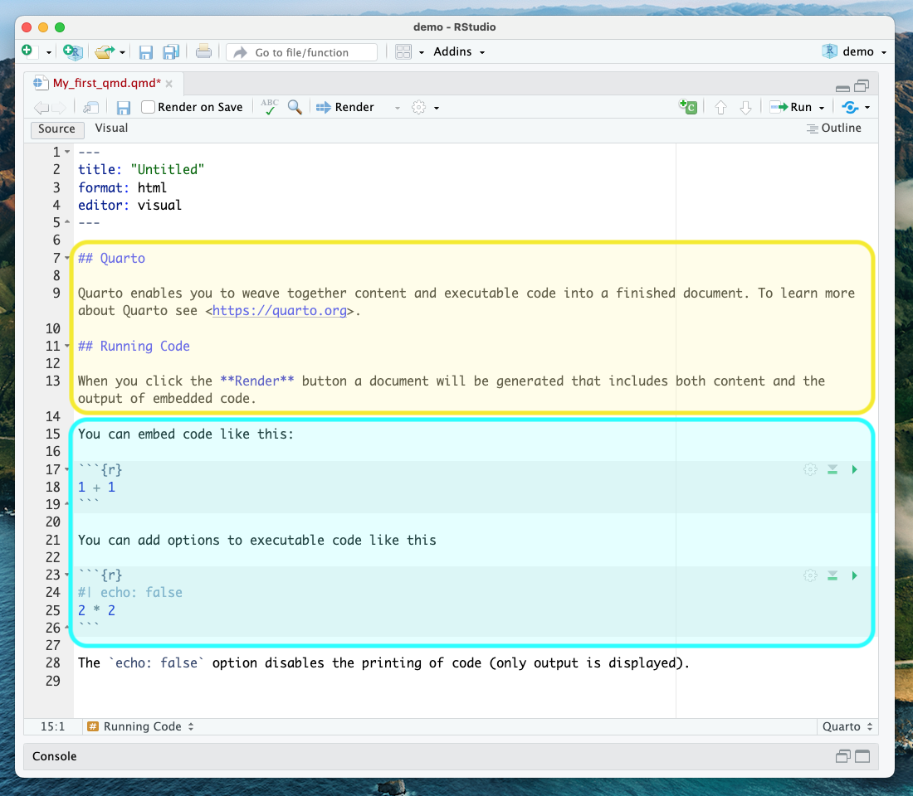
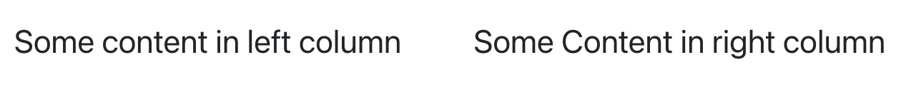

Content from Scientific reproducibility: What is it for?
Last updated on 2025-07-22 | Edit this page
Estimated time: 10 minutes
Overview
Questions
- What is reproducible research?
- How can RStudio help research be more reproducible?
- What are the benefits of using RStudio for writing academic essays and papers?
Objectives
- Understand what scientific reproducibility entails.
- Identify the benefits of using RStudio to create research reports.
- Understand how RStudio supports Open Science principles.
- Learn how RStudio can help one’s research.
Warm-up
Let’s discuss: What is reproducible research for you? Have you ever experienced issues while trying to reproduce someone else’s study or even your own research?
Reproducible studies allow other researchers to perform the same processes and analyses to produce results identical to the initial researcher’s. Original researchers have to make available the study’s associated data, documentation, and code pipelines and workflows in a way that is sufficiently self-explanatory and well-documented so that independent investigators can reproduce/recreate the original study under the same conditions, using identical materials and procedures, and ultimately achieve consistent results and render equal outcomes. Original investigators, therefore, must produce rich and detailed documentation for themselves and others. This includes fully specifying all steps taken in the study in human-readable and computer-executable ways.
The Importance of Reproducibility in Research

Source: Comic number 1869 from PhD Comics Copyrighted artwork by Jorge Cham.
Discussion: A scary anecdote
- A group of researchers obtained great results and submitted their work to a high-profile journal.
- Reviewers ask for new figures and additional analysis.
- The researchers start working on revisions and generate modified figures but find inconsistencies with old figures.
- The researchers can’t find some of the data they used to generate the original results and can’t figure out which parameters they used when running their analyses.
- The manuscript is still languishing in the drawer…
According to the U.S. National Science Foundation (NSF) subcommittee on replicability in science (2015):
Science should routinely evaluate the reproducibility of findings that enjoy a prominent role in the published literature. To make reproduction possible, efficient, and informative, researchers should sufficiently document the details of the procedures used to collect data, convert observations into analyzable data, and perform data analysis.
Reproducibility refers to the ability of a researcher to duplicate the results of a prior study using the same materials as those used by the original investigator. That is, a second researcher might use the same raw data to build the same analysis files and implement the same statistical analysis in an attempt to yield the same results. Reproducibility is a minimum necessary condition for a finding to be considered rigorous, believable, and informative.
Why all the talk about reproducible research?
Many studies claim results that cannot be reproduced. This problem has attracted increased attention in recent years, with supporting evidence that research is often not reproducible. A 2016 survey in Nature revealed that irreproducible experiments are a problem across all domains of science:

Source: Baker, M. 1,500 scientists lift the lid on reproducibility. Nature 533, 452–454 (2016). doi.org/10.1038/533452a
Factors behind irreproducible research

Source: Then a Miracle Occurs. Copyrighted artwork by Sydney Harris Inc.
- Not enough documentation on how the experiment is conducted and how data is generated
- Data used to generate original results unavailable
- Software used to generate original results unavailable
- Difficult to recreate software environment (libraries, versions) used to generate original results
- It is difficult to rerun the computational steps
Reproducible, replicable, robust, generalizable
While reproducibility is the minimum requirement and can be solved with “good enough” computational practices, replicability/robustness/generalizability of scientific findings are an even greater concern involving research misconduct, questionable research practices (p-hacking, HARKing, cherry-picking), sloppy methods, and other conscious and unconscious biases.

Source: This image was created by Scriberia for The Turing Way community DOI: 10.5281/zenodo.3 332807
If contributing to science and other researchers seems not to be compelling enough, here are 5 selfish reasons to work reproducibly according to Markowetz (2015):
- Helps to avoid data loss and disaster
- Makes it easier to write papers
- Helps reviewers see it your way
- Enables continuity of your work
- Helps to build your reputation
When do you need to worry about reproducibility?
Let’s assume I have convinced you that reproducibility and transparency are in your best interest. Then what is the best time to worry about it?
From day one and throughout the whole research life cycle! Before starting the project, you might have to learn tools like R or Git. If you wait too long while doing the analysis, you might lose a lot of time trying to remember what you did two months ago. When you write the paper, you want up-to-date numbers, tables, and figures. When you co-author a paper, you want to make sure that the analyses presented in a paper with your name on it are sound. When you review a paper, you can’t judge the results if you don’t know how the authors got there.
Alexander (2023) argues that reproducibility often starts out as a burden—something others require of you, and it can feel tedious or frustrating. But that perception usually changes the moment you return to a project after some time away. Then, it becomes clear that reproducibility isn’t just essential for advancing data science—it’s also a practical tool that makes your own work easier to understand and build upon later. To achieve reproducibility, the author suggests a three-step approach:
- Ensure the entire workflow is documented. This may involve addressing questions such as:
- How was the raw dataset obtained, and is access likely to be persistent and available to others?
- What specific steps are being taken to transform the raw data into the data that was analyzed, and how can this be made available to others?
- What analysis has been done, which codes/scripts were used, and how can this be shared clearly?
- How has the final paper or report been built, and to what extent can others follow that process themselves?
- Try to progressively accomplish the following requirements:
- Can you run your entire workflow again?
- Can another person run your entire workflow again?
- Can “future-you” run your entire workflow again?
- Can “future-another-person” run your entire workflow again?
- Include a discussion about the limitations of the dataset, methods, and workflows in the final paper or report.

Advantages of using RStudio for your project
RStudio is an integrated development environment (IDE) for R and other programming languages, such as Python, that provide many tools to support code development. It includes a console syntax highlighting editor that supports direct code execution and tools for plotting, history, debugging, collaboration, and workspace management. Writing scripts to conduct your analysis is a powerful way to weave reproducibility principles throughout the entire research lifecycle, from data gathering to the statistical analysis, presentation, and publication of results.
It is free and open-source
Reproducibility becomes more complex and opaque when results rely on proprietary software. Unless the research code is open-source, reproducing results on different software/hardware configurations is impossible. Rstudio is dedicated to sustainable investment in free and open-source software for data science.
It is designed to make it easy to write and reuse code
When you create a new script, the windows/panes within your RStudio session adjust automatically so you can see both your script and the results in your console when you run your syntax. It also allows calling up potential syntax options while writing using the tab key.
Makes it convenient to view and interact with the objects stored in your environment
RStudio has a handy “Environment” window, which shows all of the objects you have stored, including data, scalars, vectors, matrices, model outputs, etc., along with a summary of the information stored in those objects.
Makes it easy to set your working directory and access files on your computer
With RStudio, you can navigate to folders on your computer in the “Files” window, view any files you have in that folder, or go to your working directory. You can create projects that help you set your working directory and work with relative paths to external files (such as input data and figures), so it can also be used on other machines.
Integrates with collaboration and publishing tools
Another great advantage of using RStudio for your R project is that
the platform integrates with the version control system git and code repository service GitHub” Once you connect RStudio with a
repository on GitHub (remote) you can bring its content to your local
machine, update it, and share changes in a streamlined way. In git
jargon, it enables you to push and pull
commits to GitHub, allowing seamless collaboration and effective version
control. RStudio also provides tools to render documents (html, pdf,
etc.) directly from Rmarkdown and Quarto notebooks and instantly
connects with Rpubs and Quarto Pub for easy R project web
publishing. It is beyond the scope of this workshop, but Quarto also
allows you create slides, websites, books and much more. Visit the Quarto Gallery to feel
inspired with some examples.
Quarto advantages for your reproducibility
We will talk more about what Quarto is in the next episode. Still, in a nutshell, quarto documents enable you to blend your analysis and the story associated with it by mixing text (using the markdown syntax) and executable code. You can render those documents in various formats (HTML, Docx, etc.), binding documentation, code, and outputs such as figures. It is an excellent vector for reproducibility as it makes it easy to update your results according to new information. For example, if you find new data, you can re-render the Quarto with the latest data, and the plots and other computed outputs will update accordingly.
Why is it called Quarto?
Developers picked a name that had meaning in the history of publishing and landed on Quarto, the format of a book or pamphlet produced from full sheets printed with eight pages of text, four to a side, then folded twice to make four leaves.
Why Quarto and not R Markdown?
As noted before, Quarto is the next generation of R Markdown, and the
anatomy of .rmd and .qmd files is very
similar. So why move to Quarto? While compatible with Python (and bash,
Julia, C, SQL), R Markdown was designed primarily for R users.
Quarto does not require R. It supports multiple
languages by delegating code execution to external engines, such as
Jupyter for Python and Julia, or knitr for R. This design helps support
cross-language workflows and reduces infrastructure dependencies. In
addition, because Quarto is designed to be compatible with existing
formats, you can render most existing .Rmd and Jupyter
Notebooks in Quarto without modification. This helps ease the transition
to Quarto.
A Note About the Workshop Example
Our goal is that by the end of this workshop, you can create a reproducible report using the data and code we will provide. Throughout this workshop, we will be using a shorter and adapted version of the data paper:
Nitsch, F. J., Sellitto, M., & Kalenscher, T. (2021). Trier social stress test and food-choice: Behavioral, self-report & hormonal data. Data in brief, 37, 107245. https://doi.org/10.1016/j.dib.2021.107245.
We will also be using a simplified version of the project directory containing data files and scripts published by the authors on Open Science Framework: https://doi.org/10.17605/OSF.IO/6MVQ7.
The adapted paper template and project directory are used exclusively for instructional purposes with permission from the authors.
- Reproducible research is key for scientific advancement.
- RStudio can help you to organize, have better control over, and produce reproducible research.
Content from Good Practices for Managing Projects in RStudio
Last updated on 2025-07-22 | Edit this page
Estimated time: 30 minutes
Overview
Questions
- What are good research project management practices?
- What is an R Project file?
- How do you start a new R Project or open an existing one?
- How do you use version control to keep track of your work?
Objectives
- Best practices for working on research projects involving data.
- The purpose of using RStudio Projects (
.Rprojfiles). - Using version control in RStudio.
- Starting or continuing an R project.
Managing Research Projects
The ability to integrate code and narratives is a major advantage of Quarto and the RStudio environment, especially considering the scientific process is naturally incremental, and many projects start life as random notes, some code, then a manuscript, and eventually, everything ends up a bit mixed together. To complicate things further, we often work with other collaborators, lab members, graduate students, and faculty from the same or different institutions, which makes it that much more difficult to keep projects organized. When you throw data into the mix (sometimes huge amounts of it!), it’s integral to use best practices to maintain the integrity of your analysis and to be able to publish high-quality and reproducible research. Quarto is a powerful tool that can’t be fully utilized unless your project documents, scripts and other files are well-organized. So, let’s take a look at RStudio’s features for managing projects and discuss some of the best practices when working with data and collaborators.
Research Project Stress Points
We often have organizational or logistical stress points in our research that may become breaking points, especially when it comes to working with collaborators, returning to a project after a hiatus, or dealing with data and scripts. Let’s discuss three of those common stress points:
-
File/folder disorganization
- You cannot find your files on your computer (or your cloud storage)
- Multiple versions of files with names such as “finaldraft_4.txt”
- Path issues when trying to run code
- Reviewers or colleagues cannot re-run your code/analyses
-
Storage and sharing issues
- Files are only saved to your computer and are vulnerable (or have already succumbed to computer/hard drive failure
- When working with collaborators, they (or you) don’t share the files needed
- Files are shared via email attachments
- Difficult to know if you have the latest version of documents
-
Losing track of project status
- You cannot remember where you are in a project after being away for an extended period (or what you worked on the previous day…no judgment)
- You aren’t sure what you should be working on next
- You have various to-do notes spread across your office or home (or never write them down in the first place)
Discussion
To what extent do these stress points affect your research projects? Are there additional issues that you’ve encountered that slow down or derail your work due to issues with project management?
Discussion: Antidotes
What are some practices you implement to keep your project materials organized?
Antidotes
A good project layout will ultimately make your life easier:
- It will help ensure the integrity of your data
- It makes it simpler to share your code with someone else (a lab mate, collaborator, advisor, etc.)
- It allows you to upload your code with your manuscript submission easily
- It makes picking the project back up after a break easier.
- It makes your research reproducible!
We’ll discuss three aspects of project management and then implement those practices for the remainder of this workshop in the RStudio environment.
- File/Folder Organization
- Storage & Sharing
- Using Version Control
Then, we’ll get started on our project!
Project File/Folder Organization
Important principles:
Although there is no “best” way to lay out a project, there are some general principles to adhere to that will make project management easier:
Practice good file-organization
Good Enough Practices for Scientific Computing gives the following recommendations for project organization:
- Put each project in its own directory named after the project.
- Put text documents associated with the project in the doc directory.
- Put raw data and metadata in the data directory and files generated during cleanup and analysis in a results directory.
- Put the source for the project’s scripts and programs in the src directory, and programs brought in from elsewhere or compiled locally in the bin directory.
- Name all files to reflect their content or function.
- Additionally, we’d recommend including README, LICENSE, and CITATION files!
For the project we’re working on today, we used the following setup for folders and files:

Challenge 1: Take a few minutes to look through the workshop project files
Please take some time to look through the project files. Either the screenshot above or you may browse the files on GitHub at <https://github.com/UCSBCarpentry/Quarto-Project-Example>. What do each of the directories (folders) contain? What is their purpose?
See the solution drop-down for an explanation of each directory’s contents.
-
code: contains the scripts that generate the plots
and analysis (found in
output/)- /functions: contains custom functions written for the data pre-processing
-
data: This folder contains the raw and cleaned data
files
-
/processed: contains a CSV file produced by the
data_preprocessing.Rscript. - /raw: contains the individual data files from food choice trials
-
/processed: contains a CSV file produced by the
- output: contains all plots generated by the plot scripts in the code folder
-
report: all files needed for the publication of the
research project, including:
- .qmd file for the paper and additional files needed for rendering the paper
- images created specifically (not through the analysis scripts) for the paper - CITATION.md: directions to cite the project.
- LICENSE.md: instructions on reusing the project or any components.
- README.md: a detailed project description with all collaborators listed.
- Reproducible-Publications-with-RStudio-Example.Rproj: the R project file that lives in the root directory and is used by R-Studio to keep track of the project.
- _quarto.yml: the quarto project configuration file that allows users to specify various settings and options for their Quarto projects. We will learn more about it when we cover more advanced topics.
Practice good file-naming
The three principles of file naming are:
- Machine-readable
- Friendly for searching (using regular expressions/globbing)
- No spaces, unsupported punctuation, accented characters, or case-sensitive file names
- Friendly for computing
- Deliberate use of delimiters (i.e., for splitting file names)
-
data-analyses-fig1.Rwith-used consistently as a separator
-
- Deliberate use of delimiters (i.e., for splitting file names)
- Human-readable
- Name contains a brief description of the content
- Borrow from clean URL practices:
- “slug,” i.e., the part of a URL that is human-readable
- i.e.
data-analyses-fig1.R
- i.e.
- “slug,” i.e., the part of a URL that is human-readable
- Plays nice with default ordering
- Use chronological or logical order:
-
chronological: filename starts with a date.
- i.e.
2022-01-01_data_analyses.R - Use ISO 8601 date standard
- i.e.
-
logical: filename starts with a number or
keyword/number combo.
- i.e.
CC-101_1_data.csv - i.e.
CC-101_2_data.csv
- i.e.
-
chronological: filename starts with a date.
Adapted from https://datacarpentry.org/rr-organization1/01-file-naming/index.html. For more tips on file naming, check: The Dos and Don’ts of File Naming.
Challenge 2: File name syntax
Given the filename CC-101_1_data.csv and
2022-01-01_data_analyses.R, why does it make sense to use
both - and _ as delimiters/separators?
In CC-101_1_data.csv, the - is used as part
of the keyword shared between several files. the _
separates it from the trial number and description. If one were to split
the filename on the _, the keyword would be maintained, and
the trial number would be separated out. In the
2022-01-01_data_analyses.R, the dash character
- is used for a date delimiter between year, month, and
day. The underscore character _ is used between the words.
This allows us to split on underscore _, which would
preserve the date (separate from other file info).
It’s good to strategize on the best way to name files to anticipate future uses of the information contained within the filename.
Use relative paths
This goes hand-in-hand with keeping your project within one “root” directory. If you use complete paths to, say, read your data to RStudio and then share your code with a collaborator, they won’t be able to run it because the complete path you used is unique to your system, and they will receive an error that the file is not found. That is why one should always use relative paths to link to other files in the project, i.e., “Where is my data file in relation to the script I’m reading the data into?”. The practice of using relative paths is made easier by having a directory set up and keeping all project files within one root project folder.
Assuming your R script is in a code directory and your
data file is in a data directory, then an example of a
relative path to read your data would be:
df <- read.csv("../data/foodchoice_budgetlines.csv")Whereas a complete path might look like:
Windows:
df <- read.csv("C:/Users/wilma/Desktop/project23/data/foodchoice_budgetlines.csv")If the example were on a Mac or Linux computer, you would have
home instead of C:
In the complete path example, you can see that the code is not going to be portable. If someone other than Wilma Flintstone wanted to run the R script, they would have to alter the path to match their system.
Challenge 3: Relative Paths
What would be the relative path needed to refer to the file
bronars_simulation_data.csv (located in the raw directory)
from R-repro-pub.Rproj (root directory). And what about the
inversed relative path?
R-repro-pub.Rproj to
bronars_simulation_data.csv
“data/raw/bronars_simulation_data.csv”
bronars_simulation_data.csvto
R-repro-pub.Rproj “../..” “..” directs back to the
directory that contains the directory of the file of interest.
Level up your relative paths
We’ve just discussed how using relative paths is a better practice in coding, as it helps ensure that our code works consistently across different systems. However, relative paths can still be quite confusing to deal with, especially when you have many sub-directories in your project. One way to make things a bit easier on ourselves is to make sure the part that’s relative to what we’re referencing is always the same.
This is where using the RStudio Project can help. When
you create a Project in RStudio, in the background, RStudio will
automatically create a “root” folder and set it as your working
directory in R. Since in R relative paths are relative to your working
directory, this will ease referring to external input or output files
(data, images, plots, …) in a consistent manner across your project by
always having your relative paths relative to the top level folder and
help to encapsulate your work within this folder. So with an Rproject
setup, the relative path in the previous example will now be:
df <- read.csv("data/foodchoice_budgetlines.csv")In the end, this means you can move this folder around on your machine or to another machine, and all the paths will still be valid.
Treat data as read-only
This is probably the most important goal of setting up a project. Data is typically time-consuming and/or expensive to collect. Working with them interactively (e.g., in Excel or R) and where they can be modified means you are never sure of where the data came from or how it has been modified since collection. Therefore, treating your data as “read-only” is a good idea. However, in many cases, your data will be “dirty”: it will need significant preprocessing to get into a format R (or any other programming language) will find useful. Storing these cleaning scripts in a separate folder (e.g., code) and creating a second data folder to hold the “cleaned” data sets can prevent confusion between the two sets. You should have separate folders for each: raw data, code, and output data/analyses. You wouldn’t mix your clean laundry with your dirty laundry, right?
Treat generated output as disposable
Anything generated by your scripts should be treated as disposable: it should all be able to be regenerated from your scripts (and the raw data). There are lots of different ways to manage this output. Having an output folder with different sub-directories for each separate analysis makes it easier later. Since many analyses are exploratory and aren’t used in the final project, some of the analyses get shared between projects.
Include a README file
For more information about the README file and a customizable template, check this handout. Make sure to include citation and license information both for your data see creative commons license and software (see license types on Github). This information will be critical for others to reuse and correctly attribute your work. You may also consider adding a separate citation and license file to your project folder.
Again, there are no hard and fast rules here, but remember, keeping your raw data files separate is important to ensure they don’t get overwritten after you use a script to clean your data. It’s also very helpful to keep the different files generated by your analysis organized in a folder.
*what’s this .Rproj file? We’ll explain in a bit.
Storage and Sharing
Backup your work
Having a solid backup plan in case of emergencies (say, your hard drive on your computer fails) is essential. The general guideline for backups is to adhere to the 3-2-1 principle, which dictates that you should have 3 copies on 2 different media, with 1 copy offsite. Your decision on backups will be based on your own personal tolerance, but we recommend, at minimum, avoiding only having a copy of your project on your personal, work computer, or lab computer at all costs.
At the very least, you should back up your project in cloud storage (either provided by your university or paid for yourself). Common cloud storage platforms include Google Drive, Box, OneDrive, Dropbox, etc. Backing up a project on a local device to cloud storage allows you to meet two of the 3-2-1 criteria (2 different media and 1 offsite). If you’re working with at least one collaborator, and they also keep an up-to-date copy of the project on their computer, you’re set!
Version Control hosting services
If your research project involves code, the best way to make sure you have your work backed up AND keep track of your code is to use a version control hosting service such as GitHub. Note that out-of-the-box Git and, thus, GitHub are not optimized to handle large files, and therefore, we do not recommend using these tools to version data beyond maybe small data sets in a text-based format such as CSV files.
The main three version control hosting services are GitHub, GitLab, and BitBucket. To see a comparison of the available options, see this comparison on LinkedIn
We will proceed using GitHub because it is the most used version control platform to date.
Using Version Control
Okay, let’s talk about implementing version control in your project through RStudio! But first… let’s quickly clarify the difference between Git and GitHub. We already said that GitHub is the version control hosting platform. Git is the version control system and does not have to be used with GitHub. You can use Git and then host your code on Bitbucket, for example, or save it to your Google Drive. In fact, you can use Git on your local system only and never save it to a cloud storage platform. However, version control hosting platforms such as GitHub enhance the benefits of version control and offer incredible collaboration features. The difference between the two can be a bit confusing because they are so often used together, but the more you use them, the more it will make sense. Soon enough, you’ll be wondering how you even completed a code project without version control.
There are actually many ways to use Git; you could use it on GitHub only (though that suffers from a lack of options and is a bit clunky), there is a Desktop interface, and many serious programmers use it on the command line. HOWEVER, RStudio has Git controls built in, so we’ll use it all in one place!
Project Environments in R
Environments are a rather advanced topic in programming, but we will
introduce some capabilities for projects in R that increase the
reproducibility of your code. Essentially, a project environment allows
us to save (or take a snapshot) of our R version and dependencies - aka
what packages/package versions are required to run our code without
error. This can be important when collaborating with others, and you may
be unsure whether you are working with the same R and package versions.
Another common issue is if you try to run very old code from a previous
project - the older the code, the more likely errors will crop up, or
the code will no longer run as it used to. To take advantage of project
environments, we will use a package called renv, the
successor of packrat, which used to be the de facto package
in R for managing environments.
However, as noted in this RStudio article
on renv, using renv does not automatically make your
project reproducible, nor is it bullet-proof. Sometimes, other factors
come into play that may alter the results of your code despite using
renv, such as operating systems, compilers, etc. Many use
‘containers’ such as Docker or Kubernetes to go one step further in
assuring reproducibility. However, that is beyond the scope of this
workshop.
Later on this workshop we will cover dependencies and how one can
implement project environments with renv to increase
reproducibility with R projects.
Before we use Git and environments in the RStudio project, we must be working on an R Project, so let’s talk about how R Projects work in RStudio.
Working in RStudio & Quarto Projects
RStudio Project
As mentioned earlier, one of the most powerful and useful aspects of
RStudio is its project management functionality. We’ll be using an
RStudio project today to complement our Quarto document and bundle all
the files needed for our paper into one self-contained, reproducible
bundle. An .Rproj file helps keep your R scripts, data, and
other files together - just navigate through your file system to get to
your project directory and double-click on the .Rproj file. The added
benefit is that the .RProj file will automatically open RStudio and
start your R session in the same directory as the .Rproj
file and remember exactly where you left off. The .RProj file offers a
powerful way to stay organized on their own, but it also unlocks the
additional benefit of being able to use Git within RStudio.
Quarto Projects
Perhaps, confusing, but we have an additional “type” of project in
the RStudio ecosystem called a Quarto project. Thankfully, we don’t
necessarily have to pick between using RStudio and Quarto projects
because a Quarto project is just an RStudio project - with some
additional capabilities. That addition is enhanced project and style
controls in the form of a YAML file called _quarto.yml. To
keep things simple, if you are going to use Quarto documents, use Quarto
Projects; if you aren’t, stick to an R project. And no worries, you can
always add a _quarto.yml file if you have just an RStudio
Project which can retroactively turn your project into a Quarto project.
We will see how to create a Quarto project further in this workshop.
Challenge 4: R Project in “root” folder
.Rproj files must be at the top level of the root
directory of your project folder/directory. What is the root directory
again? Tip: Look back at the relative paths intro.
- Use best practices for file and folder organization. This includes using relative file paths as opposed to complete file paths.
- Make sure that all data are backed up on multiple devices and that you treat raw data as read-only.
- We can use Git and GitHub to keep track of what we’ve done in the past and what we plan to do in the future.
- Rproj files are pivotal to keeping everything bundled and organized.
Content from Navigating RStudio and Quarto Documents
Last updated on 2025-07-22 | Edit this page
Estimated time: 20 minutes
Overview
Questions
- How do you find your way around RStudio?
- How do you start a Quarto document in Rstudio?
- How is a Quarto document configured, and how do I work with it?
Objectives
- Understand key functions in Rstudio.
- Learn about the structure of a Quarto file.
- Understand the workflow of a Quarto file.
Getting Around RStudio
Throughout this lesson, we’re going to teach you some of the fundamentals of using Quarto as part of your RStudio workflow.
We’ll be using RStudio: a free, open-source R Integrated Development Environment (IDE). It provides a built-in editor, works on all platforms (including on servers), and provides many advantages, such as integration with version control and project management.
This lesson assumes you already have a basic understanding of R and RStudio but we will do a brief tour of the IDE, review R projects, and the best practices for organizing your work, and how to install or check packages you need to follow along.
Now, let’s open RStudio. After passing authentication, choose
RStudio. If you want to follow along using your local
RStudio, make sure you use IDE version RStudio v2023.06 or later and
that it is running Quarto version 1.4
or above. If you need to check that, for RStudio, choose
Help and About RStudio. For the Quarto version
checking, type in packageVersion("quarto") on the
console.
Basic layout
When you first open RStudio, you will be greeted by three panels:
- The interactive R console/Terminal (entire left)
- Environment/History/Connections (tabbed in the upper right)
- Files/Plots/Packages/Help/Viewer (tabbed in the lower right)
Once you open files, such as .qmd, .rmd or .R files, an editor panel will also open in the top left.

R Packages
Packages are the fundamental units of reproducible R code. They include reusable R functions, the documentation that describes how to use them, and sample data. They are collections of R functions, data, and compiled code in a well-defined format. The directory where packages are stored is called the library. It is possible to add functions to R by writing a package or by obtaining a package written by someone else. As of this writing, there are over 10,000 Packages are available on CRAN (the comprehensive R archive network). R and RStudio have functionality for managing packages:
- You can install packages by typing
install.packages("packagename"), wherepackagenameis the package name, in quotes. - You can see what packages are installed by typing
installed.packages() - You can update installed packages by typing
update.packages() - You can remove a package with
remove.packages("packagename") - You can make a package available for use with
library(packagename)
Packages can also be viewed, loaded, and detached in the Packages tab of the lower right panel in RStudio. Clicking on this tab will display all of the installed packages with a checkbox next to them. If the box next to a package name is checked, the package is loaded; if it is empty, the package is not loaded. Click an empty box to load that package and click a checked box to detach that package.
Packages can be installed and updated from the Package tab with the
Install and Update buttons at the top of the tab. We
have asked you to install a few packages prior to the workshop following
the setup instructions using the install.packages()
command. Let’s now make sure you have all of them good to go.
CHALLENGE 1 - Checking for Installed Packages
Which command would you use to check for packages ready for use?
To see what packages are installed, use the
installed.packages() command. This will return a matrix
with a row for each package that has been installed.
Still missing the packages for this workshop?
Use the command below:
install.packages(c("bookdown", "tidyverse", "BayesFactor", "patchwork","usethis"))
Starting and Naming a New Quarto Document
Start a new Quarto document in RStudio by clicking File > New File > Quarto Document…
You may name your Quarto document “My-first-qmd”.
New Quarto files will have a generic template unless you click the “Create Empty Document” in the bottom left-hand corner of the dialog box.
We will keep all pre-selected options: HTML as the output, knitr engine and the visual editor. The output might be changed at any time, and we can easily switch between the visual and the source editor. Knitr will be the engine used to execute the R codes and render the document in Rstudio.
If you see this default text, you’re good to go:
Visual Editor vs. Source Editor
Remember that in the settings, we chose to use the visual editor? RStudio released a new major update to their IDE in January 2020, which includes a new “visual editor” to supplement their original editor (which we will call the source editor) for authoring with markdown syntax. The visual editor follows the WYSIWYG “what you see is what you get” approach similar to Word or Google Docs that lets you choose styling options from the menu (before you had to have either the markdown code memorized or look it up for each of your styling choices). Another major benefit is that the new editor renders the styling in real-time so you can preview your paper before rendering it to your output format.
Source Editor
If you toggle the source button, you will display your quarto document in the “source editor” mode. Notice the symbols scattered throughout the text (#, *, <>). Those are examples of markdown syntax, an easy and quick, human-readable markup language for document styling.

CHALLENGE 2 - Formatting with Symbols (optional)
Certain symbols are used to denote formatting that should happen to
the text (after rendering it). Before that, these symbols will show up
seemingly “randomly” throughout the text and don’t contribute to the
narrative in a logical way. In the template qmd document, there are
three types of such symbols (##, **, <>). Each symbol
represents different formatting (think of the text formatting buttons
you use in Word). Can you deduce how these symbols format the
surrounding text from the surrounding text?
## is a heading, ** is to bold enclosed
text, and <> is for hyperlinks. Don’t worry about
this too much right now! This is an example of markdown syntax for
styling. You won’t need it if you stick to the visual editor, but
getting at least a basic understanding of markdown syntax is recommended
if you plan to work with .qmd documents frequently.
Visual Editor
Let’s switch back to the visual editor. You’ll notice that formatting elements like headings, hyperlinks, and bold have been generated automatically, giving us a preview of how our text will render. However, the visual editor does not run any code automatically. We’ll have to do that manually (but we will learn how to do that later on).
We will proceed using the visual editor during this workshop as it is more user-friendly and allows us to talk about styling without needing to teach the whole markdown syntax system. However, we highly encourage you to become familiar with markdown syntax as it increases your ability to format and style your paper without relying on the visual editor options.
Note that both the visual and the source editors offer the option to
display an outline of your document  which make it easier to navigate long documents.
which make it easier to navigate long documents.
Tip: Resources to learn more about Quarto
If you want to learn more about the source editor, please see the Quarto Guide.
Now we’ll get into how our Quarto file & workflow is organized, and then on to editing and styling!
- RStudio has four panels to organize your code and environment.
- Manage packages in RStudio using specific functions.
- Quarto documents combine text and code.
Content from Working with projects in RStudio
Last updated on 2025-11-24 | Edit this page
Estimated time: 30 minutes
Overview
Questions
- How do I start or continue a project with Git versioning?
- What are the features in the RStudio Interface for working with Git?
- What are the basics of the Git versioning workflow?
Objectives
- Copy an existing project on GitHub to make contributions
- Open a project with Git versioning in RStudio
- Learn the basics of Git - pull, add, commit, push
- Make our first edits in a version-controlled project
Working with projects in RStudio
RStudio projects make it straightforward to divide your work into multiple contexts, each with its own working directory, workspace, history, and source documents. There are several options for working with RStudio projects and enabling version control:
- New Directory - start a brand new RStudio project (with the option of version control).
- Existing Directory - add existing work to a project in RStudio (with the option of setting up version control).
- Version Control Continue an existing RStudio project that already uses version control (i.e., download it from GitHub).
When initiating a new project with a new directory, you are presented with a variety of project options, including a generic “New Project” (aka R Project) and a “Quarto project”, as seen in the image below. Regardless of your choice at this step, you can create new Quarto documents within R projects, Quarto projects, or even outside projects at any time. You may also convert an R project to a Quarto project and back at any time.
However, you don’t need to worry about this too much now, since we’ll be working on an existing project using version control. So let’s focus on the basics first, and we’ll explore more advanced features of Quarto projects in a later episode.

Using RStudio projects and Version Control in RStudio
Using version control is a powerful feature to make your research more reproducible and better organized. In order to use versioning while working in RStudio, make sure your work is set up as an R Project. RStudio’s versioning features don’t work unless your work is part of an R Project. There are three options for starting an R Project, depending on your given scenario.
Of course, if an existing RStudio project is already under version control, then opening the project will be the only thing you need to do!
Let’s see how this setup would work.
Starting a R Project with Version Control
Method #1
To start an R project, you would navigate to
File > new project rather than just
File > new file.

After choosing New Directory, choose
new project on the next menu options.
Then, to use version control, make sure to check the “Create a
git repository” box as highlighted in this screenshot: 
*Note when you choose directory name, it will create a new directory in the directory you specified along with an .Rproj file of the same name. Avoid spaces here. Underscores “_”, dashes “-” or camel case “NewProject” are recommended to name this directory/file.
*Optionally, check the box in the bottom left corner, “Open in new session,” if you want it to appear in a new RStudio window.
Add versioning to an existing project
Method #2

We won’t take the time to cover this here, but if you’ve already started a Quarto project WITHOUT version control, you can add it retrospectively. You can also add existing R files to a project and set up version control if you’ve done neither. To see a tutorial of this process, please see episode 14 “Using Git from RStudio” in Version Control with Git.
This is by far the most labor-intensive way to do it, so remember to add version control at the beginning of any new project.
Continue a version-controlled project
Method #3
 The final option is to continue a
version-controlled project. This is the option we will do for our
workshop.
The final option is to continue a
version-controlled project. This is the option we will do for our
workshop.
First, indicate which version control language you will be using (Subversion is another version control system, though less popular than Git)

When you choose this option, there will be a field to paste a GitHub URL (or another hosting platform). The repository name will automatically populate. Choose the directory on your computer where you want to save the project, and you are good to go!
Getting the files for the hands-on part of the workshop:
We have a repository already prepared for this workshop at https://github.com/UCSBCarpentry/Quarto-Project-Example. We are going to use the third option to download this repository from GitHub and work with it hands-on. You will need this repo in your working environment if you would like to follow along through this workshop. Let’s take a second to acquaint ourselves with GitHub. At this link, you may sign into your GitHub account or create one if you have not already.

The two main sections are files and directories, and the README, which should contain a narrative description of the project.
We are each going to make a copy of this repository to use for this workshop. To do so, we will do what’s called “forking” on GitHub. A Fork is a copy of a repository that you get to experiment with without disrupting the original project.
On GitHub, in the upper right-hand corner of the repository, click on the button that says “Fork” - see highlighted example below:

If you are a member of any organizations on GitHub, you will be asked whether you want to fork to your account or to an organization. Choose your personal account for this workshop. GitHub will process it for a few moments, and voila! You have your own copy of the workshop example repository.
Now, click on the green Code drop-down and then click on
the copy icon next to the repository URL:

Now, let’s return to RStudio and make our new project.
Click
File > New Project > Version Control > Git.
Paste in your repository’s GitHub URL and click the “Create Project” button.
Now, you have cloned a copy of your git repo from GitHub to your working environment.
If you’re working in the JupyterHub environment or have not yet used Git on your machine, you will need to configure your Git identity with your name and email before you can commit the changes you make during this workshop. You can just replace your name and email address in the commands below and paste them into the Terminal panel of RStudio.
git config --global user.email "you@example.com"
git config --global user.name "Your Name"Woo hoo! We have the project we’re working on for this workshop open in RStudio and set to use version control!
Git not detected on the system path
If you are using Git for the first time in RStudio, you may be getting a notification that Git isn’t set up to work with RStudio.
See the solution below:

To set it up, we need to go to Tools > Global Options 
First, make sure “Enable version control interface for RStudio
projects” is checked. Next, you must make sure that the Git executable
path is correct. For Macs, more than likely, the path will be
automatically populated as: /usr/bin/git. You may need to
change it to:
/Library/Developer/CommandLineTools/usr/bin/git
Windows users may find that the correct path is also pre-populated,
or you may need to manually add it by clicking “browse”. Your path will
be something like C:/Program Files/Git/bin/git.exe. If not,
search for where Git for Windows was installed, then open the bin folder
and select the git.exe file.
Ok! Now we have that set up. By the way, this is a one-time setup. From now on, RStudio should know where to find git on your device. We should be able to open our project from GitHub in RStudio.
Using Version Control in RStudio
There are two places we can interact with Git in the RStudio interface.
- Menu bar (Tools menu)

- Environment/History pane

Ok, but what do all the options mean? We won’t go through them all, but here are the basics to get started versioning your project.
Git Workflow
The most simple workflow for version control (working on your computer only) is referred to as “add” and “commit”:
But what do those words even mean?
Add: Choose a file or files to take a “snapshot” of. What files do you want to add to your next version?
Commit: Take a “snapshot” of a selected version of your project. The snapshot will only include the files you “added”, typically only files that you’ve edited since your last commit.
You may have just a few commits in a single work session or many commits.
When you commit, you add a “commit message,” a.k .a. a short line of text (recommended 50 characters or less) that describes the changes that were made to the file(s) you added. This helps keep your versions organized and makes it easier to remember what you did or restore your work to exactly the version needed if you make a mistake or want to implement a change.

Git Workflow with GitHub
If we are saving our work to a version control hosting cloud platform such as GitHub, our workflow gets a bit more complex, we add a “pull” and “push” step at the beginning and end of a work session.
Pull > add > commit > push
Pull: download the most recent version of the repository from GitHub to your local computer.
Push: upload the most recent version of the repository to GitHub from your local computer.
Put a pin in pulling and pushing for now. For the time being, as we edit our paper, we will just stick to adding and committing. In the end, we’ll see how to use push to GitHub, and you can experiment with pulling later on.
Your first edit
Now, let’s open up the report in this already-drafted repository. You
will find it in the report directory with the filename:
DataPaper-ReproducibilityWorkshop.qmd. Open it up, and we
will make an edit to the YAML front matter of this draft report so we
can practice using version control.
In the title add “(Carpentry Workshop Version)” and make sure to save it.
Now, in the Environment panel, toggle to the Git tab. You’ll see the file that was edited with a checkmark next to it. Click the check mark to “add”. Note that if you edited more than one file, you could choose any or all of the documents to “add”.

Have you noticed the blue ‘M’ icon in the Git Tab before you added your commit message and staged your edits? Do you know what it means? That ‘M’ indicates tracked files that have been modified. However, there are other flags depending on your interactions with project files—such as deletions, renames, or additions. Additionally, files might be ignored and not tracked at all, as illustrated below.
Now, click commit. A dialogue box will pop up. You’ll need to add a commit message to proceed. Add something about editing the title. The difference between your files will show in the bottom panel.

Hit commit, and a dialogue box will show a completed commit. Warning: DO NOT PUSH anything yet!
Congrats! You made your first commit!
Discussion: (optional) Utilizing .gitignore files
a .gitignore file is used to signal to Git NOT to track
versions of specific files. One instance where this is used in a data
analysis project is with data files that are too large to be uploaded to
GitHub.
Now, there are some caveats to this, so in what situations would it make sense to add data to the .gitignore, and in what situations would it not? What else could you imagine you wouldn’t want to track in your research project?
Why and when would it be a good idea to add data files to the
.gitignore?
- With raw data files - since they will not be modified (remember: raw data = read-only).
- With sensitive data - This should absolutely not be pushed to GitHub
Why and when would it not make sense to add data files to the
.gitignore so they will be available in the Git
repository?
- pre-processed data files - these are the data files that are edited - processed from the raw data
- small data files - may not make much of a difference whether they are tracked or not
- the first time you add data files - You can’t push data files to GitHub unless they are tracked. So, if you want your data on GitHub but don’t want to track it, you must make sure you push once and then add the file to the .gitignore file.
Challenge 1 (optional): Add the data files/directories to .gitignore
Add the data (all of the raw data files) to the
.gitignore.
Hint (1): there are two ways to do this.
Hint (2): add a forward slash / after directories.
- Open the .gitignore file by double-clicking on it in the file view
pane; on a new line add
data/. Save the file, and don’t forget to commit it.
- Click on the settings gear in the Git tab of the environment pane.
Click on
gitignore. On a new line, adddataand click save. Don’t forget to commit the.gitignorefile.
- R Studio has Git version control functionality built in.
- Forking a GitHub repository makes a copy of the repository into your personal account on GitHub.
- You can clone a git repository from GitHub to your local disk using RStudio.
- For this workshop, each learner will work with their own fork (local copy) of the “R-Repro-pub” repository.
Content from Introduction to Working with Quarto documents
Last updated on 2025-11-24 | Edit this page
Estimated time: 25 minutes
Overview
Questions
- What is Quarto?
- What is the breakdown of a Quarto document?
- How can you render the input file to the specified output format?
Objectives
- Understand what Quarto is and its applications.
- Learn about the structure of a quarto document.
- Learn how a quarto document works.
- Learn how to render a .qmd file into an output format.
Creates documents using Quarto
As seen, reproducibility implies sharing data, code, and workflows to produce the analysis and compute results. While writing scientific reports, one may choose RStudio IDE to marry all these pieces together and take advantage of the various tools it integrates with. Having a publication while minimizing reproducibility friction can be accomplished with Quarto. Quarto is a multi-language, next-generation version of R Markdown from Posit. It includes new features and capabilities while being able to render most existing Rmd files without any modification. With Quarto, you can:
- Create dynamic content with Rstudio/R, Python, Julia, and Observable.
- Author documents as plain text markdown or Jupyter notebooks.
- Publish high-quality articles, reports, presentations, websites, blogs, and books in HTML, PDF, MS Word, ePub, and more.
- Author with scientific markdown, including equations, citations, crossrefs, figure panels, callouts, advanced layout, and more.
Quarto generates a .qmd file that weaves together content and executable code into an elegantly formatted output, which can be published in various formats. It is a convenient tool for reproducible and dynamic reports which will help you:
- Keep an eye on the text (the paper) AND the source code. These computational steps are essential to ensure computational reproducibility.
- Conduct the entire analysis pipeline in a Quarto document: data (pre-)processing, analysis, outputs, and visualization.
- Apply a formatting syntax that is part of the R ecosystem and supports LaTeX.
- Combine markdown text and source code in R (and other languages).
- Easily share documents with colleagues as supplemental material or as the paper under review.
- Get figures automatically updated if you change the underlying parameters in the code. The error-prone task of exporting figures and uploading the right figure version to another platform is thus not needed anymore.
- Since it uses a text-based format, you can also use versioning control with Git.
- If you do not make any changes to the document after creating the output document, you can be sure that the paper is executable, at least at the time of submission.
- Refer to the corresponding code lines in the methodology section, making it unnecessary to use pseudocode, high-level textual descriptions, or just too many words to describe the computational analysis.
Some Real-world Applications
Finally, three real-world examples that motivated the authors of this lesson to value and use Quarto:
You can publish books using GitHub Pages, Netlify, RStudio Connect, or any other static hosting service or intranet web server.
Imagine you want to create a short document that includes some math formulas. The LaTeX document preparation can be used for this, but it can be difficult and overkill for just a few formulas in otherwise plain text. As we will learn, through Pandoc, Quarto lets you use just the best part of LaTeX—math formatting—while letting you write your text in a user-friendly way. The editor will automatically recognize the syntax and treat the equation as math.
In a past version of this workshop, we struggled with a scientific paper published in a reputable journal. In trying to recreate the original authors’ plots, we found it difficult and time-consuming to figure out exactly how the authors created their plots. Out of the many columns in their data, many have similar-sounding names. Which did they use? How did they handle missing data? Exactly what operations did they perform to compute aggregate values? How much easier it would have been if they had published the code they used along with their paper. RStudio and Quarto allow you to do this.
Anatomy of a Quarto Document
The key to our reproducible workflow is using Quarto files in RStudio rather than basic scripts to dynamically render both code and paper narrative. So let’s do a quick anatomy lesson on the components of a Quarto file (YAML header, Quarto formatted, R code blocks; also known as “code chunks”) and how to render them into our final formatted document. There are four distinct steps in the Quarto workflow:
- create a YAML header (optional)
- write Quarto-formatted text
- add R code blocks for embedded analysis
- render the document with the selected engine (Knitr in this example)
Let’s dig into those more:
1. YAML header:
What is YAML anyway?
YAML, pronounced “Yeah-mul” stands for “YAML Ain’t Markup Language”.
YAML is a human-readable data-serialization
language which, as its name suggests, is not a markup language. YAML has
no executable commands, though it is compatible with all programming
languages and virtually any application that stores or transmits data.
YAML itself is made up of bits of many languages, including Perl, MIME,
C, & HTML. YAML is also a superset of JSON. When used as a
stand-alone file, the file ending is .yml or .yaml.
Quarto default YAML header includes the following metadata surrounded
by three dashes ---:
- title
- author
- format
- editor

You can select the output format using the wizard when creating a new
document. This allows you to render the .qmd file in your preferred
format. By default, options include PDF, HTML, and Word, but a wide
range of additional
output formats options is also available and can be configured based
on your project needs.
We’ll see other formatting options for YAML later on, including adding bibliography information, customizing our output, and changing the default settings for executing your code. Below is an example of how our YAML file will look at the end of this workshop.
---
title: "Data Article: Trier social stress test and food-choice: Behavioral, self-report & hormonal data (Carpentry Workshop Version)"
author: "Felix Jan Nitsch; Manuela Sellitto; Tobias Kalenscher"
format: html
editor: visual
bibliography: references.bib
execute:
echo: true
...
---2. Formatted text:
This one is simple, it’s literally just text narrative formatted by
using markdown (more on markdown syntax later). Markdown-formatted text
is one of the benefits added above and beyond the capabilities of a
regular r script. Any text section will have the default white
background in the qmd document. As you might know, in a regular R file,
# starts a comment. In Quarto, plain text is just plain narrative text
that appears in the document. In R scripts, plain text wants to be code.
In Quarto, you will need to enclose your code in special characters. Any
symbols you do see that aren’t regular grammar components are for
formatting, such as ##, ** **, and
< >.
Tip: Bonus! You can use a variety of languages to format text and images in Quarto:
- Quarto
- HTML
- LaTeX
- CSS
3. Code Blocks:
Code blocks appear highlighted in gray throughout the qmd document.
They are surrounded by three tick marks on either side (```) in
source mode with the starting three tick marks followed by
curly brackets {}with some other code inside. The tick
marks indicate the start of a code section, and the bits found between
the curly brackets {}indicate how R should read and display
the code (more on this in the Knitr syntax episodes). These are the
sections where you add R code, such as summary statistics, analysis,
tables, and plots. If you’ve already written an R script, you can copy
and paste your code between the few lines of required formatting to
embed & run whichever piece you want at that particular spot in the
document.
Tip: Bonus! You may code with many different languages in RStudio:
- R
- Python
- Bash
- SQL
A complete list of compatible languages can be found at: https://rmarkdown.rstudio.com/lesson-5.html
Let’s take a look at the Quarto document template we have just created to see how formatted text and code are represented.

A note about coding approaches in RStudio:
When writing code in Rstudio, there are different workflows you can use, including writing code directly in the console, using a separate R script, or writing your code in a .qmd file. The best approach depends on your specific needs and preferences:
- Writing code directly in the console is useful when you want to execute code immediately to see the effect of a statement making a quick change or calculation. However, keeping track of your written code can be challenging, especially if it takes multiple lines. Additionally, if you need to run the same code multiple times, you’ll have to rewrite it each time, which can be inconvenient if you plan to reuse it.
- Using a separate R script is a more organized way to write and save code, and you can easily reuse it later or share it with others. You can easily edit and rerun the script if you need to modify the code. However, running code in a script requires more steps than running code in the console, and it can be more challenging to modify code interactively.
- Using a .qmd file combines the advantages of both the console and R script. A .qmd file allows you to write. R code and text in the same document make organizing and documenting your work easier. Additionally, you can run the code directly in the paper, which makes it easier to modify and rerun code interactively.
We will use the third approach for most of this workshop since we focus on creating a reproducible paper.
4. Rendering your Qmd document:
Simply put, rendering is the process of converting a document into a
file format or a medium that is paginated or has the concept of pages.
Clicking the render button will compile the code, check for errors, and
output the type of file indicated in your yaml header. You may select
the option “Render on Save” to see a preview of your document every time
you save edits. Attention: your qmd document may not run and render as
your indicated output if there are any errors in the document, so it
also functions somewhat as a code checker.
Try it yourself!
We’re going to pause here and see what the Quarto document does when it’s rendered. We’ll just use the generic template, but when we’re working on our own project, rendering periodically while we’re editing allows us to catch any mistakes early. We’ll continue rendering our qmd throughout the lesson to see what happens when we add our markdown and knitr syntax and to make sure we aren’t making any errors.
This is a little preview of what’s to come in the later episodes: Click the “render” button.
Before you can render your document, you’ll need to give it a file
name and choose what folder you want to save it to. Choose
my_first_qmd.qmd as your file name and save it to an easily
accessible directory in your file system.
Your document should render like this:

Warning: Enable Pop-ups!
If using the Jupyter Hub RStudio setup, you may not see your preview until you enable pop-ups since the web browser of your choice may block pop-ups by default.
CHALLENGE 1 - Rendering the document in another format
Suppose you want this .qmd document to render as a Word document. What options would you have?
You may change the output format in the YAML to docx.
Note that to preview Word documents, you need to have MS Word, Libre or
Open Office installed on your machine. Alternatively, you may enter the
following command in the terminal: `quarto render my_first_qmd.qmd –to
docx
Note about PDFs
In order to create PDFs you will need to install a recent
distribution of LaTeX. We recommend the use of TinyTeX, which you can
install with the following command:
quarto install tool tinytex.
- Quarto lets you create reproducible documents.
- An qmd file is comprised of a YAML header, formatted text in qmd, and code blocks.
- The render function converts the file into the chosen output format.
Content from Writing and Styling Qmd Documents
Last updated on 2025-11-24 | Edit this page
Estimated time: 20 minutes
Overview
Questions
- What is the Visual Editor in RStudio?
- Which features does the Visual Editor have?
- How can I can apply styling and formatting to Qmd documents in Rstudio more easily?
- How to add inline code?
Objectives
- Learn how to enable the visual editor.
- Get familiar with its basic functionalities.
- Apply formatting and styling using the visual editor.
Formatting Qmd Documents with the Visual Editor
As we mentioned earlier, the visual editor in RStudio makes
formatting much more effortless. It provides improved productivity for
composing longer-form articles and analyses with Quarto. Markdown
documents can be edited in either source or visual mode. To switch into
visual mode for a given document, toggle on the visual option at the
top-left of the document toolbar (alternatively for windows, the ⌘⇧ F4
keyboard shortcut). This will prompt a formatting bar through which you
can apply styling, add links, create tables, and others similar to
functions you find in google docs and other document editors. Note that
you can switch between source and visual mode at any time (editing
location and undo/redo state will be preserved when you switch). Let’s
try it! Feel free to follow along or just watch this quick demo. But
first, make sure to have your visual editor enabled on your screen.
Also, make sure to open your
DataPaper-ReproducibilityWorkshop.qmd file located at the
report folder.
If you’d like to learn more about markdown basics and use the source mode to format you documents check Quarto’s markdown basics.
Editor Toolbar
The editor toolbar includes buttons for the most commonly used formatting commands:

Additional commands are available on the Format, Insert, and Table menus:
Tip: Inserting anything with shortcuts
You can also use the catch-all ⌘ / shortcut to insert just about
anything. Just execute the shortcut then type what you want to insert.
For example: /lis will prompt listing options.
Let’s get some formatting done in our example paper. We will look for
some Examples and replace with the recommended style so
we can all produce a similar output at the end of the workshop.
Rendering Documents
When you do your first render, the pop-up may be blocked by your browser. You can unblock the pop-up or in the Background Jobs pane, find the local host url and copy+paste that into your browser.
Applying Emphasis
At the very top of the document we have a recommended citation for the sample data paper (Example 1). We want to emphasize the title of the journal, “Data in brief” in italics. Select the text and click in the I icon and voilà! Remember to delete (Example 1).
Adding Links
In the same citation we have just worked on, let’s now add a link to it by selecting and copying the doi address (Example 2). Then, click on the link icon and paste the address in the URL field. Simple right? If you prefer, you can also the drop-down insert menu, or even use shortcuts. By hovering the mouse over the desired icon, you will see which keys you should use, also found in this markdown shortcuts list. To revert a shortcut, use the backspace key.
Adding Headings
Adding headings to a a Quarto markdown document in Rstudio is as simple as applying links. Let’s say we want the abstract section as a Heading Level 2. We can select the “abstract” then, and under “Normal” on the left-hand side of the menu, we can choose the desired level. Again, all the shortcuts will be listed next to the styling in the menu. Now apply the same heading to keywords and Level 2 to “Value of the Data” (Example 3).
Creating Tables
Because creating tables manually in qmd documents could be a little painful for beginners, Rstudio released an add-in functionality for tables back in 2018. The new visual editor, however, have made the process to create qmd tables more similar to other editors we use daily. In our template, we have the specification table with 10 rows and two columns. If we were willing to add that table, we could do that by inserting a table to a selected part of the documents and by specifying the desired number of rows and columns. Including a caption is optional, but recommended. We can add or delete rows and columns, add a header that will be set bold by default but can be changed, and set the desired alignment. Select the desired text and click on the crossed T icon if you wish to clear formatting.
Creating Bullet and Numbered Lists
Again, similarly to other document editors, Rstudio allows you to turn text into bullet or numbered lists. Let’s apply a bullet list to the paragraphs specifying the “Values of the Data” reported in the data paper (Example 4). Assuming we were willing to create a numbered list instead, we could have followed the same process and chosen the other icon. We can also sink or lift the listed items.
Adding Images
You may need to include static images to your manuscripts. For that, you can use the insert image function, click on the painting icon or even use the shortcut that shows right next to the function in the menu. After browsing and upload the desired image you may also specify the caption and the image title, as well as adjust dimensions if needed. Let’s insert image for Fig. 1 (Example 5).
Adding Formulas
If you have math formula in your manuscript there are three different
ways you may insert one. Let’s look for (Example 6) for
an example. Point and click at the insert menu, use the catch-all
⌘ / keyboard short and then get to inline math mode, or
type the formula content between dollar signs $. You will
notice that the color and font type will change, as Rstudio identifies
the block as an inline equation.
Keyboard Shortcuts
As you become a more regular Rstudio user, you may also consider
using some keyboard shortcuts for all basic editing tasks. Visual mode
supports both traditional keyboard shortcuts (e.g. ⌘ B for
bold) as well as markdown shortcuts (using markdown syntax directly).
For example, enclose bold text in asterisks or type ##
and press space to create a second level heading. Here are some of the
most commonly used shortcuts for Mac users:

Tip: Windows users should replace in the shortcuts above
⌘ by ctrl and ⌥⌘ by
alt (+) ctrl.
Other Editing Features
The visual editor allows users to insert images by browsing their location or copying and pasting it to the Qmd document directly. There are also options to add html, line blocks, blockquotes, and footnotes. Up next we will learn more about how to add code chunks. In further episodes we will also learn how to insert citations and create a bibliography.
Bonus Content: More Styling with Fence Divs (Demonstration Only)
Quarto also allows some cool styling using colons to create fenced divs. The advantage of using fenced divs is that you may section styling/layout to pieces of your content more easily, using an unified and syntax, while also protecting and preserving formatting across different types of outputs. Essentially, these will adopt the following structure:
- Start and end with an equal number of colons being minimum of 3
::: - Add curly brackets to indicate the start/end of a class or name,
e.g.,
{.class}
We won’t have time to cover these extensively, but let’s take a look at a few examples.
Adding borders around text
We can create clusters of content and add a border around the text using a div:
If we type:
::: {.border}
Example of some content with a border.
:::
When we render it, we will get:

Dividing content into separate columns
If we want to separate content into two or more columns that could be accomplished with a similar approach as above.
If we type:
:::: {.columns}
::: {.column width="50%"}
Some content in left column
:::
::: {.column width="50%"}
Some Content in right column
:::
::::
When we render it, we will get:

If you would like to explore more the Fence Divs and other cool functionalities check the Divs and Spans documentation.
Time to Render!
Let’s see how your document looks like.
- The visual editor has made formatting much easier.
- You can apply Qmd styling without prior Quarto knowledge.
- You can include inline code to narratives for basic calculations and dynamic information.
Content from Adding Code to Quarto Documents
Last updated on 2025-07-22 | Edit this page
Estimated time: 30 minutes
Overview
Questions
- What is Knitr and how it works?
- What are code chunks, and how are they structured?
- How do you add and run code chunks?
- How can I avoid issues with relative paths?
Objectives
- Understand how knitr integrates code and text.
- Understand the anatomy of a code chunk.
- Learn how to insert run-able chunks of code to integrate into your report.
- Learn how to avoid path issues in Quarto documents.
Introduction to Code in Quarto & Knitr Engine
We’ve learned about the text-formatting options for Quarto in RStudio. Now, let’s dive into the code portion of Quarto documents. As we’ve seen so far, Quarto flips the “code first” default of R scripts, prioritizing code over text. Instead of using comments to add text, Quarto Documents uses a “text-first” default and requires the use of special syntax to add code. In Quarto documents, the syntax to signal the switch to code is called “code chunks” in RStudio (referred to as “code cells” in other environments). Code chunks are interpreted by Knitr. But first, what is Knitr?
What is Knitr?
Knitr is the engine in RStudio, which creates the “dynamic” part of Quarto reports. More specifically, it’s a package that allows the integration of R code into the HTML, word, PDF, or LaTeX document you have specified as your output for Quarto. It utilizes Literate Programming to make research more reproducible.
How it works?
First, code chunks are sent to a preceding stage of processing by Knitr, which runs the code, generates any plots or figures, and then “knits” the code output and text together. Next, Quarto outputs the “knitted” text and renders code into an HTML document (or another document type indicated in your configuration file).
There are two ways to add code to Quarto documents:
- Code Chunks
- Inline Code (as we will see in the next episode)
First, we’re going to talk about code chunks for including substantial portions of code into our narrative, such as generating figures and plots. A plethora of options become available to us when using code chunks, so this tends to be the more complex part of Quarto documents.
Using Code Chunks
Code chunks (also called “code blocks” or “code cells”) are the preferred option when you need to write more than a line or two of code, such as building plots or tables. More than just a vehicle to run code, they also allow modifications to how code is rendered and styled in your final output. We’ll learn more about that as we walk through the “anatomy” of a code chunk.
Creating a Code Chunk
Okay, let’s get to some code! Some plots have already been included in our paper but as static images. Now, we will add some additional plots generated straight from R code - which are also more reproducible and easier to update than static images. Using code to generate images directly assures us that if there are any changes to the data or code the plots will update automatically. We also don’t have to generate the new plots, save them as images, and then add them back into our paper. Not only is this a time-saver, but it also helps prevent versioning errors!
Navigate to the end of the paper where it says “Example 8”. This is where we will add our first code chunk.
Let’s start a new code chunk by typing our starting backticks & r between curly brackets or using the buttons in the editor toolbar.

Tip: Four ways to insert code chunks
- the Add Chunk button in the editor toolbar (looks like a green square with a C)
- the Insert > Code Chunk menu option in the editor toolbar
- by typing the code chunk delimiters {r} and ```. *If you are in “editor” mode, you will need to remember to end the code chunk with ending backticks as well ```.
- the keyboard shortcut - Ctrl + Alt + I (Windows) - Cmd + Option + I (Mac)
Basic Anatomy of a Code Chunk
The most basic (empty) code chunk looks like this:

Can you tell the subtle differences between the visual and source modes in RStudio? That’s right - the backticks ```. As seen in this image, the only required syntax for a code chunk are the backticks preceding and ending (seen only in source mode) and the specified language (in our case, ‘r’) placed between the curly brackets.
Unless indicated otherwise, we will continue working in visual mode.
Fun fact: Other Programming Languages
Although we will (mostly) be using R in this workshop, it’s possible to use other programming or markup languages. For example, we have seen that we can use LaTeX code for equations. You can also use Python and a handful of other languages, so if R is not your preferred programming but you like working in the RStudio environment, don’t despair! Other options include SQL, Julia, bash, c, etc. It should be noted, however, that some languages (like Python) will require installing and loading additional packages.
Adding our Code Example to a Code Chunk
Now, let’s add our first code by copying and pasting the code found
below into our empty code chunk (also found in the code
folder as HR_analysis.R.
R
library(tidyverse)
library(BayesFactor)
#Read data
df <- read_csv("data/processed/preprocessed-GARP-TSST-data.csv")
#Convert df to long-format
df_long <- df %>%
pivot_longer(cols = c(HR_Baseline_Average, HR_TSST_Average),
names_to = "Measurement",
values_to = "HR")
#Drop missing values
df_long <- df_long %>% drop_na(HR)
#Make sure columns are coded as factors for analysis
df_long$VPN <- as.factor(df_long$VPN)
df_long$Measurement <- as.factor(df_long$Measurement)
df_long$Condition <- as.factor(df_long$Condition)
#Bayesian Analysis
BF <- anovaBF(formula = HR ~ Measurement*Condition + VPN,
data = df_long,
whichRandom = "VPN")
#Evidence for interaction term
BF_interaction <- BF[4]/BF[3]
BF_interaction
#Summarize to mean / SEM for plot
df_long2 <- df_long %>%
group_by(Measurement, Condition) %>%
summarize(mean_value = mean(HR, na.rm = T),
sem = sd(HR, na.rm = T)/sqrt(n()))
#Create plot
plot <- ggplot(df_long2, aes(Measurement, mean_value, group = Condition, color = Condition)) +
geom_pointrange(aes(ymin=mean_value-sem, ymax= mean_value+sem)) +
geom_line() +
theme_classic() +
scale_x_discrete(labels = c("Baseline",
"TSST-G/Control")) +
ylab("Mean Heartrate (BPM)") +
scale_colour_grey(start = 0.5, end = 0.2) +
theme(legend.position = "top")
#Print and save plots
plot
ggsave("output/heartrate.pdf", plot, width = 4, height = 3)
Running the Code in a Code Chunk
With code chunks, we have other options for running and debugging code that don’t require us to wait for the entire file to render. This is particularly useful as we add more code to the document, and the render time increases. Let’s explore our options:
1) Run from code chunk
See the green play button on the top right corner? This allows us to run code from that specific code chunk.
2) Run menu
In the editor menu, there is an icon that says Run with an arrow pointing left. This menu provides more options for running code chunks, including the current chunk, the next chunk, all chunks, etc.

3) Keyboard shortcuts:
Of course, there are shortcuts to all of the actions found in the Run menu (that is, if you can remember them all).
| Task | Windows & Linux | macOS |
|---|---|---|
| Create a code chunk | Ctrl + Alt + I | Cmd + Option + I |
| Run all chunks above | Ctrl+Alt+P | Command+Option+P |
| Run current chunk | Ctrl+Alt+C | Command+Option+C |
| Run current chunk | Ctrl+Shift+Enter | Command+Shift+Enter |
| Run next chunk | Ctrl+Alt+N | Command+Option+N |
| Run all chunks | Ctrl+Alt+R | Command+Option+R |
| Go to next chunk/title | Ctrl+PgDown | Command+PgDown |
| Go to previous chunk/title | Ctrl+PgUp | Command+PgUp |
Run your first code chunk with one of the three options given above.
Well, shoot! We’re getting an error:
ERROR
Error: 'data/processed/preprocessed-GARP-TSST-data.csv' does not exist in the current working directory ('/Users/rcurty-local/Documents/GitHub-Repos/Quarto-Project-Example/report').
If we go to the bottom of the code chunk or check the console, we’ll see more details on the error:

This is a path error. But why are we seeing this error? Unfortunately, a slight discrepancy exists between the behavior of regular R scripts run in R projects and Quarto projects. R scripts will always use the project’s root folder as the working directory, while Quarto documents use the folder where the qmd file is located as the working directory. If you were learning on your own, you may have been majorly confused by this minute difference. No worries, we’ll see how to change the default working directory globally in the next episode.
Dealing with Relative Path Errors
For now, we can fix this error by adding the correct relative path:
df <- read_csv("../data/processed/preprocessed-GARP-TSST-data.csv")Instead of:
df <- read_csv("data/processed/preprocessed-GARP-TSST-data.csv")Run the code again to make sure it works properly.
Did it work? Look under the code chunk. If all goes well, you should see a plot preview beneath the code chunk.

Stay Tuned - Better Method for Relative Path Issues
In a few episodes - “Advanced Code Chunk Options” we’ll introduce a technique that will eliminate this issue we encountered with relative paths. Then we’ll build on that further by learning a better way to run code from R scripts in code chunks! You may be tempted to sneak a peek - but don’t worry we’ll get there soon!
- Knitr will render your code and markdown-formatted text and output your document format of choice.
- Code chunks are runnable pieces of R code.
- Setting your working directory at the project level can effectively mitigate path-related challenges encountered while working on Quarto documents.
Content from Rendering & Customizing Code Outputs
Last updated on 2025-07-22 | Edit this page
Estimated time: 30 minutes
Overview
Questions
- How do you render code in Quarto documents?
- How do you apply code chunk options at the document level to customize your code?
- How do you label and caption code chunks?
- What is inline code and when should it be used?
Objectives
- Learn how to insert and render run-able chunks of code to integrate into your report.
- Apply labels and caption to code chunks.
- Learn the syntax and how to add in-line code.
Rendering Code in Quarto Documents
In the previous episode, we just saw how to run our code in our code
chunks to test that it works and to see a preview of the code output
that will render in our HTML document, but to actually render
the final, we need to use the Render button as with. Using the
Render button with code chunks is a two-step process -
first, the code is run (all code chunks will run automatically). Second,
(if there are no code errors) the document of choice will render for our
whole Quarto document.
Time to Render!
Now, let’s Render the Quarto file and see how our code output looks on the final HTML page.
Wait… what’s all that output in our document? We don’t want that in our paper!
This happens because the output from the running code (messages, results, warnings, etc.) gets added to the Quarto document instead of being printed to the console. Let’s see about adjusting the output to make it look better with code chunk rendering options.
Code Chunk Options
There are over 50 different code chunk options!!! Obviously, we will not go over all of them, but they fall into several larger categories, including code evaluation, text output, code style, cache options, plot output, and animation. We’ll discuss a few options for code evaluation, text output, and plot output.
Code chunk options in Quarto are added within code chunks and always have the following format:
#| option: option-text
Common code chunk options:
include = (logical) whether to include the chunk
output in the output document (defaults to TRUE).
eval = (logical or numeric) TRUE/FALSE to evaluate (or
not) or a numeric value like c(1,3) (only evaluate expressions 1 and
3).
echo = (logical or numeric - following the same rules
as above) whether to display source code or not.
results = (logical or character) text output of the
code can be hidden (hide or FALSE) or delineated in a certain way
(default ‘markup’).
warning = (logical) whether to display the warnings in
the output (default TRUE). FALSE will output warnings to the console
only.
message = (logical) whether or not to display messages
that appear when running the code (default TRUE).
Using Code Chunk Options for Clean Quarto Documents
Ok, let’s use some of the options above to improve the look of our
Quarto document. Add the following options one by one to see how they
change your output (click Render after each option you
add):
- echo: false
- message: false
- warning: false
- results: false
These options mean the source code will not be printed in the rendered HTML document, messages from the code will not be printed in the rendered HTML document, and warnings will not be printed in the HTML document (but will still output to the console). Plots, figures, or whatever is printed by the code WILL show up in the final html document.
Now, we are seeing what we would like: a figure without other output to show in our paper.
CHALLENGE 1 - Rendering Codes (Optional)
Given the following options, How will some hypothetical code render? Try it out with the code we just added to visualize the styling change.
```{r}
#| eval: TRUE
#| include: FALSEThe expressions in the code chunk will be evaluated, but the
outputted figures/plots will not be included in the rendered
document.
When might you want to use this?
If you need to calculate some value or do something on your dataset for
a further calculation or plot, the output is not important to include in
your paper narrative.
Tip:
Find a complete list of code chunk options on Knitr developer Yihui Xie’s online guide to knitr.
Label Your Code Chunk
Before we get to fixing how our code output looks, let’s pause a second and give our code chunk a label. While not required for running your code, it is good practice to give a name to each code chunk because a label is a unique identifier that allows for more advanced options (such as cross-referencing) to work with your qmd files later on:

Some things to keep in mind
- The chunk label syntax is always
#| label: chunk-labelwithchunk-labelreplaced with your own text - The chunk label has to be unique (i.e., you can’t use the same name for multiple chunks)
We’ll see in a bit where this code chunk label comes in handy. But, for now, let’s go back and give our first code chunk a name:
#| label: fig-heartrate
When naming your code chunks that will produce figures or tables, use
fig- and tbl-. We will learn how these will
allow for cross-references.
Tip: Don’t use spaces, periods, or underscores in code chunk labels
Avoid spaces, periods (.), and underscores
(_) in chunk labels and paths. If you need separators, you
are recommended to use hyphens (-) instead. For example,
setup-options is a good label, whereas setup.options and chunk 1 are
bad; fig-path = ‘figures/mcmc-’ is a good path for figure output, and
fig-path = ‘markov chain/monte carlo’ is bad. See more at: https://yihui.org/knitr/options/
Caption Your Code Chunk Output
The options we just looked at focus on code evaluation and text
output. However, we have another set of options that deal with how plot
or figure outputs look at act. Many of the options start with
fig. The one we will use today allows us to add a caption
to our figure. Again, this is an optional feature, but if you need (or
want) to add captions to your publication, it is straightforward to do
in code chunks.
The caption information also resides at the top of a code chunk using
the #| syntax as such:
#| fig-cap: "Figure Caption Here"
Don’t forget to put the caption within quotes
"".
CHALLENGE 2: Adding a caption and cleaning up unwanted content for Figure 2
Let’s add the following caption: “Mean heart rate of stress and control groups at baseline and during intervention.” and ensure only the figure and the caption will be displayed in the html document.
So, you should end up with the following in your code chunk:
```{r}
#| label: fig-heartrate
#| echo: false
#| message: false
#| warning: false
#| results: false
#| fig-cap: "Mean heart rate of stress and control groups at baseline and during intervention."Set the option fig-cap to equal the text in double
quotes.
More plot/figure options
Other options that change how a plot or figure appears often use the
syntax fig-xxx similar to fig-cap Some other
useful plot/figure code options include (From Yihui Xie’s page
):
-
fig-width,fig-height: (both are 7; numeric) Width and height of the plot (in inches), to be used in the graphics device. -
out-width,out-height: (NULL; character) Width and height of the plot in the output document, which can be different with its physical fig-width and fig-height, i.e., plots can be scaled in the output document. -
fig-align: (‘default’; character) Alignment of figures in the output document. Possible values are default, left, right, and center. The default is not to make any alignment adjustments. -
fig-link: (NULL; character) A link to be added to the figure. -
fig-alt: (NULL; character) The alternative text to be used in the alt attribute of the image tags of figures in HTML output. By default, the chunk option fig-cap will be used as the alternative text if provided.
Let’s render one more time to see if our figure outputs how we’d like and has a caption.
Time to Render!
Let’s try that again
Best Practices for Loading Data and Packages
We can improve organization and rendering speed in our documents by
learning how to load data and packages. So far, we’ve loaded the library
tidyverse and the data frame df we need in the
first code chunk. Now, if we want to add another figure (say the hormone
analysis code ’hormone_analysis.R`), which uses the same data as our
first code generated figure - we would be loading tidyverse and the data
for a second time. This is unnecessary because once libraries and data
are loaded in a Quarto document, they are available for use in the rest
of the code in the following document.
The best practice is to load libraries and data once at the beginning of our document, making it available for all other figures or calculations throughout the document - allowing us to avoid repetition in our code and saving us rendering time. This also makes it easier for us to keep track of all the libraries and data we need to use in any given document for ourselves and collaborators. If anything needs to be tweaked, we don’t need to search through every code chunk in our qmd document to make a change - it’s listed right at the top.
R
# load libraries
library(tidyverse)
library(BayesFactor)
library(patchwork)
# load data
df <- read_csv("../data/processed/preprocessed-GARP-TSST-data.csv")
Order matters!
What would happen if we loaded the data before we loaded the libraries?
We would get an error because we haven’t loaded tidyverse which is required to read the CSV yet!

At this point, we could go back through our R scripts and comment out (or delete) the beginning sections where we load the data and libraries (you will see this is already done in most of the scripts in the code folder). You can imagine that the more code chunks you have, the more time taking this step would save. Bonus: This also works to load the data before it is called in the inline code as we will see below.
Adding In-line Code
We have already learned how to create, run, and customize code chunks, but what if you only need to make a quick calculation, and adding a code chunk seems a little overkill?
Sometimes, you just need to do a quick calculation to add to your narrative - such as a count of total observations in your data or the mean of one of your variables. In those cases, it may not be worth setting up a code chunk to calculate those values, so Quarto also provides the ability to use inline code.
If that is the case, you can include r code directly in
the text portion of your document by enclosing it between single
backticks. Say you are discussing some of the summary statistics in your
manuscript, Quarto makes this possible through HTML/LaTeX inline code,
which allows you to calculate simple expressions integrated into your
narrative. Inline code lets you insert `r code`\ into your document to
dynamically update portions of your text. In other words, if your data
set changes, the code will automatically update the specified
calculation.
This can be helpful when referring to specific variables in your data. For example, you should include numbers that are derived from the data as code, not as numbers.
Thus, rather than writing “The CSV file contains choice consistency data for 10.000 simulated participants” (Example 7A), replace the static number with a bit of code that, when evaluated, gives you a dynamic number if anything changes on your dataset. Note that there is not an insert option to do this from the menu in the visual editor, so we need to insert inline code manually, for example:
The CSV file contains choice consistency data for `r nrow(bronars_simulation_data)`\ simulated participants.
When you render, you might get an error. Any idea why? That is because we need to make sure to import the dataset we are referring to before the inline code can work. Let’s add the following to our chunk at the beginning of the document where we loaded our other data:
R
bronars_simulation_data <- read_csv("../data/raw/bronars_simulation_data.csv")
Time to Render!
If you update your dataset, this value will match the number of rows.
CHALLENGE 3 - Adding inline code
Suppose we want to add another inline code to the same paragraph. Look for (Example 7B) to represent the average value for violation_count present in the same dataset. Which inline code would we have to add to the following sentence?
Tip: we will need to use a dataset$variable syntax!
`r mean(bronars_simulation_data$violation_count)`
5.3924
Important Note:
Make sure the file you are calling is in the right subdirectory and your working directory is set appropriately.
More on inline codes:
Quarto will always display the results of the inline code but not the code. Inline expressions do not take knitr options.
- Each time you render/knit the document, calculations and plots will run and be displayed.
- Options for code chunks can be set at the document level.
Content from Advanced Code Chunk Options
Last updated on 2025-11-21 | Edit this page
Estimated time: 20 minutes
Overview
Questions
- How do you apply global options at the project level?
- How do you globally load data and packages?
- How do you run code from an external script in a code chunk?
- How do I run external scripts in a Quarto document?
Objectives
- Learn how to source external scripts to run within a qmd document to modularize your code.
- Learn about using global options for project-level settings.
Quarto Projects
You may remember (or not, that’s ok!) that when we saw how to create a new Project back in episode 4 we were presented with this long list of project options:

We told you not to worry too much as most of these options are just variations of a regular old R Project (including a Quarto Project!) Regardless of your choice at this step, you can create new Quarto documents within R projects, Quarto projects, or even outside projects at any time. You may also convert an R project to a Quarto project and back at any point as well.
You may, therefore, be a bit confused about the distinction between a Quarto Project and a regular R Project. To put it simply, a Quarto project is an R Project which contains a “_quarto.yml” file. This file dictates shared YAML configuration across documents in a Quarto project. This ensures that any document rendered within the project directory automatically inherits the metadata defined at the project level allowing capabilities such as defining a style for the whole project or redirecting outputs to a specified sub-directory. The Quarto Website, Blog and Book are simply Quarto Projects with a pre-defined “_quarto.yml” file defining some basic style settings characteristic of those mediums (and even then a Quarto Blog could be easily converted to a Quarto Website for example).
Check it out yourself
Open up a project with one of the Quarto Project options (Blog, Book, Website) and another project with the other option. Compare the .yml files and guess at what the settings might dictate for the Quarto documents in the project.
Set Working Directory in Quarto Documents
Okay, remember how we changed the file path in the code chunk we copied into our document to correct the relative path for reading the data? This happened because, in Quarto documents, the working directory is wherever the qmd document is located, but our code is located in a different folder. This means they have different relative paths to locate and read the data we want to work with. We can simplify things by designating the working directory for our document relative to the root project directory instead. This lets all files work relative to the project root instead of each other, standardizing the relative paths. Note that this is mainly important for code chunks - text portions of Quarto documents are not affected. This will clarify some of our confusion with relative paths across our R project.
So, one should learn how to accomplish that by changing the working directory at the project level YAML settings. So we’ll navigate to our _quarto.yml document in our root project directory and open it.
We’ll add the following settings to the yml file:
...
execute-dir: project
...So the yml file should now look something like this:

Yay! Congratulations on mastering a smoother approach to handling path problems when working with Quarto documents!
Run Code from an External Script in a Code Chunk
Let’s learn another technique for adding code-generated plots and
figures to our document. This time around, let’s see how to run code in
a code chunk from an external R script instead of somewhat awkwardly
copying and pasting the code from an R script to a code chunk in our
.qmd.
There are at least a few benefits to running code in this modular fashion instead of copy/pasting:
Automatic updates: if the code gets updated in the R script, it will automatically be updated in the Quarto document as well. We won’t need to copy/paste code updates, which would make it easy to end up with discrepancies between our
.rscripts and our.qmdpaper.Readability: calling code externally only takes several lines of code - versus copy/pasting 50+ lines of code from our scripts.
Less fussing with relative paths* - we had to change the code slightly in the first example to update the file path to the data set, which introduces variations and inconsistencies. With this method, we won’t have to modify the source code.
*unfortunately, you will never be free of relative paths, but you can make it a bit easier on yourself.
Again, let’s test this out in our generic Quarto document. After our first figure, add a new code chunk:
We’re just going to test out the same figure again so we can verify this new method works.
Add the code to our Quarto document
In the heart rate analysis code chunk, let’s delete the existing code that we copy-pasted.
R
# run the code from HR_analysis.R in the code directory
source("code/HR_analysis.R")
# display the plot created by code in HR_analysis.R
plot
It should look like this:

Attention: DON’T forget to add a chunk name and caption for Figure 3 (we can use the same name and caption as before). Remember, we don’t need to add options since we defined them globally.
Time to Run!
Let’s see if our code worked when generated from an external script
Time to Render!
If the code ran without error, let’s render the whole document again and take a look.
Our plot should look exactly the same as the first copy-pasted one.
Success! You’ll notice that the global code chunk options were also applied to this code chunk.
Tip: Many ways to run external code
There are other methods one can use to run external code. The best choice may depend on the context or your personal preference:
- source() – see more at bookdown.org
- sys.source() – see more at bookdown.org
- knitr::read_chunk() – see more at stackoverflow
Challenge 1: Your turn! Create Figure 3 with the external code
First, find Example 9 in the qmd document for Fig 3
(ctrl-f “Example 9”). We need to add the code for the hormone
analysis.
Make sure to give the code chunk a name: fig-hormones
and a caption:
"Fig 3: Cortisol and Amylase levels in stress and control groups"
R
{r}
#|fig-hormones
#|fig.cap = "Fig 3: Cortisol and Amylase levels in stress and control groups"
# run the code from hormone_analysis.R in the code directory
source("code/hormone_analysis.R")
# Display the plot created by code in hormone_analysis.R
plot
- Learn how to externally source code
source() - Learn how to modularize your code to make it more reproducible
- Use a chunk at the beginning of your document to load libraries and data to make your document more efficient.
Content from Bibliography, Citations & Cross-Referencing
Last updated on 2025-11-24 | Edit this page
Estimated time: 35 minutes
Overview
Questions
- How can you insert citations to your manuscripts using RStudio’s visual editor?
- How can you change citation styles?
- What are the options to display cited and uncited bibliography?
- How can you cross-reference content?
Objectives
- Inserting citations and listing bibliography in a Quarto Document file.
- Customizing citation styles and the display of references and bibliographies.
- Add cross-referencing, directing your readers through your document.
Why Cite?
Correctly citing and attributing publications is key to academic writing. Older versions of RStudio require Pandoc’s citation syntax to render bibliographies correctly. We won’t be covering this approach extensively in this workshop since the new visual editor has made this process much simpler. You can refer to our previous workshop on R Markdown pre-visual editor for more information.
The new visual editor has made citations and cross-referencing much easier, by offering different options for referencing various types of sources. Before getting into these different features, let’s first learn how you can call the citation window dialog on Rstudio and how to navigate these different options.
Calling Citation Options on Rstudio
After placing your cursor where you want to insert the citation, you
can either click the @ icon in the toolbar or select
Insert, and from the drop-down menu, choose
Citation. Alternatively, you can use the keyboard shortcut
⇧⌘ F8 on Mac or Ctrl+Shift+F8 for Windows.

The citation window will display different options for inserting citations. You can either find items listed in your own sources through your Bibliography folder (you should have one already in your project folder provided by us), your Zotero Library(ies) if you have the reference manager installed on your computer, or even use the lookup feature to search for publications by DOI (Digital Object Identifier), Crossref, DataCite, or PubMed ID as we will explore a bit more shortly.
Understanding How Rstudio Stores and Organizes Citations
Have you noticed that the YAML header contains “bibliography:
references.bib”. Any idea why? Well, that’s because on our paper
template, we have some existing citations and a
references.bib file in our project folder. Rstudio
automatically adds that to the YAML once you cite the first item in your
manuscript. But let’s first open the references.bib file (located in
report>source on your project folder) and understand how citations
are presented there:

A file with the BIB file extension is a BibTeX Bibliographical
Database file. It’s a specially formatted text file that lists
references pertaining to a particular source of information. They’re
normally seen only with the .bib file extension but might
instead use .bibitex. BibTeX files might hold references
for things like research papers, articles, books, etc. The file often
includes an author’s name, year, title, page number, and other related
content. Each item can be edited, in case there is any metadata
incorrect or missing.
Most citation and reference management tools such as Refworks,
Endnote, Mendeley and Zotero, as well as some search engines (e.g.,
Google Scholar), most scientific databases, and our UCSB library catalog
allow us to export citations as .bib or BibteX files.
These files are used to describe and process lists of references, mostly
in conjunction with LaTeX documents. Each .bib file has a citation key
or ID preceded by an @, which uniquely identifies each
item. Citation keys can be customized, as we will learn in a bit, but be
advised that your manuscript will render citations correctly only if you
have the cited item corresponding to its exact key.
Inserting Citations
Note that we have different blocks in this file, starting with a
@ and ending with a curly bracket {, each one
representing a unique citable source. We will now be adding a new item
using the DOI lookup function so that you can see how the magic
works!
Let’s assume you want to include a citation in the first line of the Value of the Data section because you would like to provide some reference to how the salivary cortisol technique has been used in research. So let’s click where we want to insert the citation, call the citation function, and look for the following DOI: https://doi.org/10.1016/B978-012373947-6.00334-2

The DOI lookup uses the persistent identifier, which connects to the DOI resolver service and retrieves the .bibtex file with resource metadata1. You should insert the whole DOI address, including the resolver service, the prefix, and the suffix which is specific to the resource as illustrated below:

Rstudio will search the DOI API and list the only matching result, and you can insert it. After confirming this is the citation you would like to include, you can modify the key if you would like to simplify it and also choose if you would like to insert it as an in-text citation, meaning you would like to have the last name of the author(s) followed by a page number enclosed in parentheses. i.e., Kirschbaum and Hellhammer (2007), but in this case, we will uncheck that option since we won’t include authors as part of the narrative. Instead, we would like to insert a parenthetical citation, where authors and year will be displayed inside the parentheses such as (Kirschbaum and Hellhammer 2007). You may insert more than one citation by selecting multiple items.
This item will be automatically listed in your references.bib file
and will help you manage your citations more efficiently. Pretty cool,
huh? If you want to cite this same item again, you can type
@ and the first letters of the item name, which will be
auto-completed by Rstudio. You will have to type the key between
brackets for parenthetical citations, and for in-text narrative
citations, you only need to type in the key. Note that when you hover
over the citation, you will preview the full reference for the cited
item that will be listed at the bottom of the manuscript. This feature
helps you to identify if you have to edit anything in the .bib file your
citation is calling. Also, note that all citations will be included at
the end of your document under a reference list.
Challenge 1 - Insert a Citation Using the DOI Lookup Function
Following the same process described, insert a parenthetical citation
to the publication “Welcome to the tidyverse” (https://doi.org/10.21105/joss.01686) where there is a
mention to this package in the data paper. Look for:
add citation here
OUTPUT
[@wickham2019]
render the document and voiala!
(Wickham et al., 2019)Inserting citations using Crossref, DataCite, or PubMed follows a process very similar to the DOI process; however, to search on their APIs, you must input information accordingly. For Crossref, you may use keywords and author information to identify an item (e.g., Cortisol Stress Oken) and Rstudio will connect to Crossref search and provide related results, often not as specific as the DOI search, for cases you know exactly what you are looking for. DataCite allows searches by persistent identifiers or keywords, while PubMed searches exclusively in biomedical literature indexed in the database. If you have the PMID (PubMed reference number), which is uniquely assigned by the NIH National Library of Medicine to papers indexed in PubMed, similarly to the DOI search, it will save you time.
Editing Metadata & Citation Key
Not all citations are in perfect shape when we import them. You may have to adjust them (e.g., include missing metadata and move content to another metadata field). If needed, we can do so by modifying the .bib file. As briefly mentioned, you can also edit citation keys. By default, most citation keys will have the first author’s last name or the first word of the title (if no authors), followed by the year of publication. You may consider editing the citation key in case you want to simplify the entry and speed up the autocomplete option. If you choose to do so, you can simply click on the key in the .bib file and edit it. Please be advised to use this option with caution and to update citations to match the .bib file.
Changing Citation Styles
You might have noticed that all citations are inserted in a specific style. Can you guess which one? If you answered Chicago, that is correct! By default, Rstudio uses a Chicago author-date format for citations and references. To use another style, you will need to specify a CSL (Citation Style Language) file in the CSL metadata field in the YAML.
But how can you identify which CSL you should use? You can find required formats on the Zotero Style Repository, making searching for and downloading your desired style easy.
Download the format you wish to use and call it out in the YAML. We
have pre-saved the APA CSL file in the project folder for you. But if
you would like to follow the process or try another style, go to the
Zotero Style repo and select American Psychological
Association 7th edition or any other style of your choice. It will
automatically download the file (e.g., apa.csl). Make sure
to save it to your project directory in the report/source folder. In the
YAML we have to call the exact name of the file preceded by “csl:”
OUTPUT
csl: apa.cslSave and render the document to see how citations and references have changed. This same process could be followed for any citation style required by the university, the journal, or the conference you are planning to submit your manuscript.
Adding Items to the References without Citing them
All cited items will be listed under the section References, which you created before while practicing headings and subheadings. Items will be placed automatically in alphabetical order for most citation styles. However, there might be cases which you will be referencing supporting literature that you have not necessarily cited in the document.
By default, the bibliography will only display items that are
directly referenced in the document. If you want to include items in the
bibliography without actually citing them in the body text, you can
define a dummy nocite metadata field in the YAML and put
the citations there.
OUTPUT
nocite: |
@item1, @item2To demonstrate that, let’s include the bibtex @key for
an item that was not cited in the YAML. Note that this will force all
items added in the YAML with this command to be listed in the
bibliography.
Let’s try!
Challenge 2 (optional): Adding references you have not cited
We have used a few packages in our paper that we do not necessarily cite in the text. However, adding them to the reference list is a good practice. This practice is recommended for giving proper credit to package developers and also to inform your readers about the exact version you have used to produce your paper.
Ideally, we would follow this process for all packages we have installed and used to produce the paper. But for the sake of time, let’s do that process for the package BayesFactor. Since we have the option to call R packages right from the insert citation, look for the package and think how we can include it to the reference list even without citing it on our paper.
You should call the @ it in the YAML, with the nocite
function:
OUTPUT
nocite: |
@BayesFactorImportant Info:
Does the indentation matter? Yes, you have to indent at least one
space, and the citation key should turn green to work.
In case you are including a citation to nocite that you
have not cited in the document, you have to make sure first that the bib
file is in your Bibliography folder.
Tip:
Depending on the bibliography style, BibTeX converts all characters in the title to lowercase, except for the first character. If you want to override this, wrap the character(s) you wish to show in upper case, in curly braces.
title = "Pascal, {C}, {Java}: were they all conceived in {ETH}?" Adding Cross-referencing
Cross-referencing is a useful way of directing your readers through your document, and it can be accomplished in Quarto. You may create cross-references to figures, tables, equations, sections, code listings, theorems, proofs, and more.
Essentially, every cross-referenceable entity requires a caption (description), the object info, and a label (unique identifier. Let’s say we want to cross-reference Figure 1 in the paper. To do so, we will need to first create an ID for it. If we are in the visual mode, we can double-click the image, click the “Attributes” tab, and enter #fig1 as the ID.

Alternatively, in the source mode, we can enter that same ID in front of the figure name, by typing in {#fig-fig1}
{#fig-fig1}
Ok, but how can you call that in another part of the paper? You may
enter the key below using the unique identifier, but instead of the hash
#, it should be preceded by an at @:
@fig-fig1
If you do not start your label with fig-, Quarto will
interpret it as a citation and won’t render correctly. Click
Render and see how it displays.
You may follow a similar approach to add cross-references for
sections (#sec-)/(@sec-), equations
(#eq-)/(@eq-), tables (#tbl-)/(@tbl-) and
other objects (see: Quarto’s
Cross References guide).
If you wish to add a cross-reference to a figure that was generated via code block, you have to provide a label (id) and a caption at the beginning of the figure code block.
#| label: fig-id
#| fig-cap: "figure caption here" And then, enter the @fig-id where you want to note the cross-reference in your paper.
Challenge 3: Adding cross-reference for code block figures
Your turn! Include a cross-reference to Figure 3.
Make sure you have added a label (id). If you missed that step, now
it is the time to add #| label: fig-heartrate Call the
figure using the assigned id @fig-heartrate
- Rstudio supports different lookup strategies to make the citation process easier.
- Rstudio supports different citation styles.
- The YAML can be adjusted to display uncited items in the reference list.
- Use bookdown to cross-reference content.
Content from Using Git in RStudio
Last updated on 2025-07-22 | Edit this page
Estimated time: 15 minutes
Overview
Questions
- How do I use version control in RStudio?
- How do I track and commit changes?
Objectives
- Understand how the git workflow works in RStudio.
- Learn how to track changes in your files in Rstudio.
Using Version Control in RStudio
There are two places we can interact with Git in the RStudio interface.
- Menu bar (Tools menu)
- Environment/History pane
Ok, but what do all the options mean? We won’t go through them all, but here are the basics to get started versioning your project.
Git Workflow
The most simple workflow for version control (working on your computer only) is referred to as “add” and “commit”:
But what do those words even mean?
Add: Choose a file or files to take a “snapshot” of. What files do you want to add to your next version?
Commit: Take a “snapshot” of a selected version of your project. The snapshot will only include the files you “added”, typically only files that you’ve edited since your last commit.
You may have just a few commits in a single work session or many commits.
When you commit, you add a “commit message,” a.k .a. a short line of text (recommended 50 characters or less) that describes the changes that were made to the file(s) you added. This helps keep your versions organized and makes it easier to remember what you did or restore your work to exactly the version needed if you make a mistake or want to implement a change.
Git Workflow with GitHub
If we are saving our work to a version control hosting cloud platform such as GitHub, our workflow gets a bit more complex, we add a “pull” and “push” step at the beginning and end of a work session.
Pull > add > commit > push
Pull: download the most recent version of the repository from GitHub to your local computer.
Push: upload the most recent version of the repository to GitHub from your local computer.
Put a pin in pulling and pushing for now. For the time being, as we edit our paper, we will just stick to adding and committing. In the end, we’ll see how to use push to GitHub, and you can experiment with pulling later on.
Tips for working with Git
Commit frequently; each commit should be a distinct set of edits that you can summarize in 50 characters or less. Don’t add a bunch of unrelated edits to the same commit; it makes it harder to look back through your “snapshots” and find the right one if you need to.
Committing your edits
Now, that we have performed a few edits to the qmd paper example, in the Environment panel, toggle to the Git tab. You’ll see the file that was edited with a checkmark next to it. Click the check mark to “add”. Note that if you edited more than one file, you could choose any or all of the documents to “add”.
Have you noticed the blue ‘M’ icon in the Git Tab before you added your commit message and staged your edits? Do you know what it means? That ‘M’ indicates tracked files that have been modified. However, there are other flags depending on your interactions with project files—such as deletions, renames, or additions. Additionally, files might be ignored and not tracked at all, as illustrated below.
Now, click commit. A dialogue box will pop up. You’ll need to add a commit message to proceed. Add something about “editing the paper during the workshop”. The difference between your files will show in the bottom panel.
Hit commit, and a dialogue box will show a completed commit. Warning: DO NOT PUSH anything yet!
Congrats! You made your first commit!
##Note: Commit frequency
Typically, we would not wait that long to commit changes and we would prefer to break them down and have more specific messages to track changes more effectively. But we had to keep it simple for this workshop.
Discussion: (optional) Utilizing .gitignore files
a .gitignore file is used to signal to Git NOT to track
versions of specific files. One instance where this is used in a data
analysis project is with data files that are too large to be uploaded to
GitHub.
Now, there are some caveats to this, so in what situations would it make sense to add data to the .gitignore, and in what situations would it not? What else could you imagine you wouldn’t want to track in your research project?
Why and when would it be a good idea to add data files to the
.gitignore?
- With raw data files - since they will not be modified (remember: raw data = read-only).
- With sensitive data - This should absolutely not be pushed to GitHub
Why and when would it not make sense to add data files to the
.gitignore so they will be available in the Git
repository?
- pre-processed data files - these are the data files that are edited - processed from the raw data
- small data files - may not make much of a difference whether they are tracked or not
- the first time you add data files - You can’t push data files to GitHub unless they are tracked. So, if you want your data on GitHub but don’t want to track it, you must make sure you push once and then add the file to the .gitignore file.
Challenge 1 (optional): Add the data files/directories to .gitignore
Add the data (all of the raw data files) to the
.gitignore.
Hint: there are two ways to do this.
Hint2: add a forward slash / after directories.
- Open the .gitignore file by double-clicking on it in the file view
pane; on a new line add
data/. Save the file, and don’t forget to commit it.
- Click on the settings gear in the Git tab of the environment pane.
Click on
gitignore. On a new line, adddataand click save. Don’t forget to commit the.gitignorefile.
- RStudio integrates with Git to track and commit changes performed locally.
- You may use
.gitignoreto determine which files Git should ignore when tracking changes.
Content from Collaborating via GitHub
Last updated on 2025-07-22 | Edit this page
Estimated time: 35 minutes
Overview
Questions
- How do I authenticate with GitHub?
- How do I put my project on GitHub?
- How do I “push” my latest changes to GitHub?
Objectives
- Authenticate with GitHub.
- Connecting your project to GitHub.
- Make changes locally and push them to GitHub.
Synchronizing Your Local changes Your Repository on GitHub
Earlier, we looked at integrating version control into your RStudio workflow to help streamline your work and keep track of changes. In this part of the workshop, we will set up Rstudio to authenticate with GitHub, which is necessary to push your local changes to the remote repository on GitHub.
Terminology: Git Push and Pull
Definition: The process of synchronizing your local git repository with your git repository on GitHub (or other Git server).
GitHub requires a more secure method of authentication than a simple Username and Password. For this workshop, we’ll be using a Personal Access Token (PAT) method which you will setup for your account on GitHub. We will configure RStudio to use your PAT to authenticate with GitHub so you can download and upload your RStudio code edits to GitHub.
Setting up your GitHub Personal Access Token (PAT)
In your RStudio console enter following command:
usethis::create_github_token()
This will open your web browser and, after logging in if necessary, you’ll be on GitHub settings page to create a PAT. Most of the options have already been set for us, we only need to update:
- the Note field by describing what is the token for. We recommend a combination describing the computer the PAT will be used on and what it is going to be used for.
For example:
RStudio on MacBookAir for Reproducibility Workshop
- Set expiration to 90 days. Note that GitHub will send you an email when it’s time to renew your token that is about to expire. It is easier to not let the token expire, otherwise you will have to regenerate a new one and do all the setup again.

You can leave all the other options as selected. Click on the green Generate token button at the bottom of the page.
- On the next screen GitHub shows you the new token. Be sure to copy it as you only get one chance to see the token text. This is the only time you will be able to see it, so do not close this page before you are done with the setup! Copy your PAT to your clipboard. Return to RStudio and run the following command in the R console:
gitcreds::gitcreds_set()
This will prompt you to paste the PAT you just copied from GitHub. Paste your PAT and hit Enter. You you should see a few lines letting you know that the token has been setup.
To check your work you can run the following command in your R console:
usethis::git_sitrep()
if the output shows the line
Personal access token for 'https://github.com': '<discovered>'
then you know you’ve succeeded in connecting RStudio with GitHub.
Note that if you use several computers/servers, you will have to do those steps again on each machine.
Note:
If you cloned the repository already the next 2 steps are not necessary, as the “origin” is set as part of the cloning process.
Getting your Repository’s URL from GitHub
You can get your repository’s address from GitHub by navigating to your repository on GitHub.com and clicking the green “Code” button.
With that address, you can complete setting the origin URL in the next step.
Checking and Setting the “Origin” for the local copy of your repository.
If you forked and cloned the demonstration publication for this workshop, as covered in an earlier episode, then your copy of the repository should already have the “origin” set. Once the “origin” is set properly, you should be able to push and pull your changes to and from GitHub. When you clone a repository from GitHub, your local copy of the repository should have GitHub set as the “origin”.
You can check this in Rstudio –> Tools –> Project Options –> Git/SVN
If the “Origin” field is blank, then you’ll need to add it from the terminal with a couple of terminal commands like this:
git remote add origin <paste your repository address here>
git fetch --set-upstream origin mainBe sure your GitHub username is part of the URL.
After you’ve updated the Origin URL from the command line, go back to R Studio –> Tools –> Project Options –> Git/SVN to verify you have the “Origin” field filled in. It should look like this.

Push your local changes up to your repository GitHub.
With authentication set up and your local copy of your repository pointing to GitHub as the “Origin” you should be able to make changes locally and push them up to GitHub.
Let’s try it and see if it works.
Challenge 2: Push to GitHub
- Make a change to one of the files in your project or add a new file.
- In R Studio’s Git panel, check the box to Stage the changed file.
- Commit the change to your Git repository.
- Click the green up arrow to Push your repository changes up to GitHub.
- Look on GitHub.com to verify your changes are there.
Tips for working with Git
Tips for working with Git
You should pull each time you start working on your project after a hiatus or before each edit if you know a team member is working at the same time.
At the end of your work session (or more frequently if you are working at the same time as team members), “push” your commits to the remote repository - this way your local changes get added to your team’s remote repository.
This pull, add, commit, push routine will become second nature. When you sit down to work do a pull and when you’re about to get up push to establish a ritual that marks the beginning and end of your work session.
With the ability to synchronize your changes between GitHub and your local repo, the next step is to explore options for publishing your research paper.
- Setting up R Studio to authenticate with GitHub using a Personal Authentication Token (PAT).
- Setting the Git repository Origin in your R Studio project enables pushing and pulling from your local copy of the repository to the repository on GitHub.
Content from Managing Dependencies in R/RStudio
Last updated on 2025-07-22 | Edit this page
Estimated time: 20 minutes
Overview
Questions
- How can I avoid the dependency hell problem and make my code reproducible in the future?
- How can I document my computational environment?
- How can I manage package and software dependencies in RStudio?
Objectives
- Understand the relevance of documenting the computational environment used in your project.
- Recognize the importance of managing dependencies for RStudio projects.
- Understand how to setup Groundhog to support R code reproducibility.
Documenting your Computational Environment
Just sharing your code, data, and workflow does not magically make your research reproducible if we don’t know what language the code is written in or if functions change or are deprecated in newer versions, breaking your code.
Therefore, you should ask yourself: * What are the versions of the packages used for my project? * Will my project be usable on other systems or in the future? * How do you deal with projects requiring different versions of a package?
Reproducibility is a spectrum that encompasses several actions. A first step to help prevent this problem is to carefully document the hardware and versions of software used in your analyses so that others can recreate that computing environment if needed.
In R, you can accomplish that by running the
sessionInfo() function. see
CRAN Docs This will create a snapshot of your computational
environment, including your OS, R session/version, packages, their
versions, and where they were installed from (e.g., CRAN, GitHub, or
local Libraries). This information should be integrated into your README
and project documentation.
After using this function, you will print:
[add image]
Try it yourself and check which versions you are using for each of
the packages you have installed for the workshop.
You may save it as a .txt file and save it in your project folder using
the following command:
sessionInfo() %>% capture.output(file="session_info.txt")
Avoiding the Dependency Hell
Assume you have followed all the recommended practices to create reproducible projects. You chose RStudio/R, a free and open-source software; you have used relative paths and produced clean and clear code; your project directory and data files follow name conventions and are well-organized and beautifully documented. You have also documented your computational environment, as advised above.
Is that all? Well, not quite. Imagine investing significant time and effort into completing sophisticated data analysis, only to face a frustrating situation. When R gets upgraded and new package versions are released, everything suddenly starts crashing down. How can you ensure that the packages you rely on for your project remain on the same version consistently, even in the future?
One common reproducibility issue in research relates to software dependencies. “Dependency hell” is a colloquial term used to describe a situation in software development where the complex web of dependencies between different software components becomes difficult to manage or resolve. It typically occurs when multiple software libraries or packages have conflicting or incompatible requirements regarding the versions of other libraries or packages they rely on.
If you can only install one version of the shared software or library, you may have to find newer or older versions of the other software packages. But doing so can create more problems because those new versions might not work with other software you have installed, causing problems for your code to break and your publications not to render things correctly.
Let’s say you’re working on a data analysis project and have two R packages you’re using: “package X” and “package Y.”
"package X" version 1.0.0 depends on "package Z" version 2.0.0. "package Y" version 1.5.0 depends on "package Z" version 1.0.0.
You start your project by installing the latest versions of both packages. At this point, everything works fine, and you can proceed with your analysis using both packages. However, a few months later, you must reproduce your analysis and reinstall the packages. Unknown to you, “package Z” has been updated since your last installation, and the new version is incompatible with the older version that “package Y” depends on. When you try to run your analysis, you encounter errors or unexpected behavior because “package Y” is no longer compatible with the updated version of “package Z.” This mismatch in dependencies can result in reproducibility issues, making it challenging to replicate your previous results.
You may think I can still look at the sessionInfo() .txt
file and install older packages to make things work again, right? Well,
that will require some extra work and affect your other projects that
may rely the same packages with different versions. In this case, we
need to take an additional action avoid this problem.
Enhancing Reproducibility with Groundhog
R/RStudio offers a vast ecosystem of packages and libraries that cater to a wide range of data manipulation, visualization, and analysis needs. However, harnessing the full potential of R often involves juggling a multitude of dependencies, which can lead to complex versioning issues, compatibility challenges, and time-consuming troubleshooting.
This is where Groundhog comes to the rescue! Groundhog (https://groundhogr.com) was designed to streamline and simplify R dependency management. With Groundhog, R users can effortlessly tackle the intricacies of package installations, version control, and environment isolation, making it the go-to solution for researchers seeking to optimize their R workflow.
Advantages
You may use it for individual .R scripts and do not have to work within a project structure.
Users don’t need to know about the “groundhog” package or how it works behind the scenes to use the code. Running the script will automatically handle the installation and loading of required packages or display an error if this process fails.
It gives real-time feedback when each package is loaded, verifying whether versions match or not.
How does it work?
The groundhog. library() loads packages & their
dependencies as available on a chosen date on CRAN. Packages get
automatically installed if needed. Installation keeps, rather than
replaces, existing versions of that package.
Writing a New R Script with Reproducibility in Mind
The first step is to choose a date. Think of it as setting the stage for your coding, having as a starting point the first day of the month. In that case, you load all the essential packages tailored to that chosen date before creating your code:
{r} # Imagine we're in 2023-12-01 library(groundhog) pkgs <- c(pkg1, pkg2, pkg3, pkg4) groundhog.library(pkgs, '2023-12-01')
The advantage of this approach? When you run or make any edits to your script in the future, you can stick with your original date choice or update that by changing that date accordingly.
And if you’re going all out with multiple
groundhog.library() calls, you can set the date as a
variable, making your script even more dynamic.
{r} groundhog.day <- '2023-12-01' groundhog.library(pkgs, groundhog.day)
Using GroundHog in Existing Scripts
Assume you developed a script months ago before you knew Groundhog
even existed. The good news is that you can still apply it
retroactively. To do so, you will need to set a
groundhog day and adjust the library loading to
groundhog.library. The key question is: what date should
you choose? We advise you to try the date the script was created or last
saved as a proxy. If the documentation includes that information, go for
it and test if things will render correctly. If not, try a month before
or later, and it should work. See why documenting your work matters? We
want to avoid guessing games.
After applying Groundhog, let’s see what our code in our .qmd file would look like.
[add image - before and after]
Other Packages that Support Code Reproducibility in R
Groundhog is only one solution to help you circumvent the dependency hell in R. While it is simple to implement and relatively effective, it may not be the best option depending on your project goals. It is beyond the scope of this workshop to explore other packages available for dependency management in R, but if this is a topic you would like to explore further, below, we list packages you may consider exploring:
| Package | Description |
|---|---|
| RENV | The renv package is integrated with RStudio and helps you create reproducible environments for your R projects. Use renv to make your R projects more isolated, portable and reproducible. |
| RANG | The rang package is geared towards reconstructing historical R computational environments which have not been completely declared. |
| MiniCRAN | The miniCRAN package makes it possible to create an internally consistent repository consisting of selected packages from CRAN-like repositories. |
| Require | The require package includes all-in-one
management for packages in R focused around a single function,
Require,
|
| Checkpoint | The checkpoint package allows you to install packages as they existed on CRAN on a specific snapshot date as if you had a CRAN time machine. |
- Run the
sessionInfo()function to take a snapshot of your computational environment. - Groundhog is a handy tool for capturing your project’s package dependencies.
- Make your R scripts reproducible by replacing
library(pkg)withgroundhog.library(pkg,date).
Content from Publishing your project
Last updated on 2025-07-22 | Edit this page
Estimated time: 10 minutes
Overview
Questions
- What are the options for you to publish your project?
- What free and open publishing resources are available?
- What aspects should guide your choice?
- How can you create qmd documents using journal templates?
Objectives
- Identify different ways you can publish your project.
- Overview of some free and open resources available.
- Learn which factors should guide your decision-making process.
- Understand what journal templates are and their advantages.
What is Next?
Once you have completed your Quarto manuscript following all the best practices for reproducibility, including organizing your project files, what is next? The answer depends on your plans to move forward. Let’s explore some scenarios:
If you plan to share your insights with your community right away
Publishing with RPubs
The easiest way would be to use RPubs, which is integrated with Rstudio. RPubs is a bare-bones, free web hosting service. It provides no other services; meaning, no support for search, collaboration, persistent identifiers, or versioning. But, it is the simplest and most direct way of getting your R Markdown (and now Quarto) document published on the web directly from RStudio. For a more full-featured hosting service, consider GitHub and GitHub Pages, which will be described later.
Notice the circular blue “Publish” button in the upper right corner of your Render output. Click this to publish to RPubs. It is worthnoting, that this process requires a Rregistration This is where you’ll need a Rpubs account, as mentioned in setup for this workshop.
Click the blue publish button:
Wait for the installation to be completed. If a little menu pops up, select “Publish Document…” and you’ll be presented with the following panels:

(The other option in the dialog box, RStudio Connect, is a standalone publishing platform for teams to share content. It requires a purchase to host and use.)

The first time you publish, RStudio will likely ask if you want to install some needed packages; say yes. RStudio will then open up a web browser to allow you to sign in to rpubs.com.
At the end of the publishing process, your paper will be live on the
internet with a URL similar to:
https://rpubs.com/yourname/678624
RStudio also saves an HTML version of your knit document to your local file system. Look for it in the same directory as the Quarto file in your R-Studio project directory. This html document is self-contained and highly portable. Images are encoded directly into the HTML so you can easily move it to any web hosting you have available.
Publishing with Quarto Pub
Quarto Pub is a free publishing service ideal for publishing blogs, course or project websites, books, presentations, and personal hobby sites developed in Quarto. All documents and sites published to Quarto Pub are publicly visible, so be mindful you should only publish content you wish to share publicly. Also, there is a limit of 100 MB per publication and a soft limit of 10 GB per month.
There are two approaches to publish content to Quarto Pub:
- Use the
quarto publishcommand to publish content rendered on your local machine
or
- If you are using GitHub, you can use a GitHub Action to render your project automatically and publish the resulting content whenever your code changes.
As we are getting started, we will briefly cover only the first approach. To explore the second option, check Quarto Pub’s documentation.
Publish Command
- From the directory where your project is located, execute the quarto publish command for Quarto Pub, type:
quarto publish quarto-pub your-document.qmd
In our case, that would be
quarto publish quarto-pub DataPaper-ReproducibilityWorkshop.qmd.
But wait, first, we have to ensure we are using the right path to call
the document, which is in the report folder. So, we can type in the
terminal cd report before proceeding.
As it is our first time publishing in Quarto Pub, the command above will prompt you to authenticate. We will need to confirm the authorization and create a Quarto Pub account to first.
Then, you will be offered the option to change the document type if you’d like. After the confirmation, there will be some action on the terminal to render the document, which will be published in Quarto Pub.

If there is time, we encourage you to try it yourself.
Publishing as website on GitHub
Another better but slightly more involved option for publishing a
Quarto document on the web is to use GitHub and GitHub Pages. We have
already seen how RStudio has built-in support for pushing your RStudio
project to GitHub. To enable publishing to GitHub Pages, the website
publication companion to GitHub, go to your repository’s Settings page
on GitHub and select a branch (“branch” is a repository term) to
publish. Name your main Quarto file index.qmd, and render
it to HTML as index.html. With GitHub Pages enabled on your
repository, the HTML file in your repository at https://github.com/myusername/myrepo/index.html will
appear on the web as https://myusername.github.io/.
Other document types
When you create a new Quarto file in R Studio recall that you are presented with a choice of Output Formats:
For the purposes of this workshop, we’ve been using HTML as the output format, but other types are available. You can render your Quarto as a document, a presentation or a Shiny app. With the default installation of RStudio HTML output is most likely to work. Other formats may require additional R packages and/or code libraries be installed on your computer. RStudio also has a templating system to help with creating Quarto files with common elements, YAML metadata and rendering instructions. This can be very helpful, for example, if you want to create a weekly or monthly report documenting an ongoing experiment, study, or other changing data.
If you are willing to publish your manuscript through a peer-reviewed journal
- Most journals now request the underlying data, code, and documentation to be shared along with the manuscript, so in that case, you will have that handy. Whenever possible, give preference to open-access journals with data sharing recommendations to foster open science, transparency, and research reproducibility.
- If your chosen journal does not require nor recommend a particular process for making your project data available (some will dictate what, where and how project data should be uploaded), you may still consider depositing your project files in a reliable data repository and cross-reference paper and project data, ideally with a formal citation containing a Persistent Identifier(e.g., DOI, ARK, handle, Purl) to avoid link rot.
- In terms of data repositories, there are many options available, and they can be disciplinary, institutional, or generalist (e.g., Zenodo, Figshare). For a comprehensive list of options available, please refer to the Registry of Research Data Repositories.
Creating Pre-formatted Papers (Optional)
We have learned how to start a new document on RStudio and will learn good practices for project organization next. But let’s say you are writing a paper having a journal in mind. Writing it in your style and then formatting it before submission will duplicate your work, right? The good news is that RStudio and Quarto can give us a hand with that.
Quarto offers some journal formats and made them available within the quarto-journals GitHub organization, including:
- Association of Computing Machinery
- American Chemical Society
- Biophysical journal
- Elsevier Journals
- American Statistical Association Journals
- Journal of Statistical Software
- Public Library of Science
This list is expected to grow rapidly with new contributions submitted to the Quarto Journal Templates Repository. You may also create your own templates following these guidelines.
Journal templates require features of Quarto version 1.2, so we must
ensure we have the right version. You can check your Quarto version in
the Terminal with the command: quarto --version. We should
be good with that for this workshop, but if you are using a lab computer
later on, you may need to update Quarto. See: release versions of
Quarto
Quarto uses a template command that can be called in the terminal to
create an article in any of these formats. Suppose you want to use the
Elsevier template. In Rstudio, in the terminal (if not showing, select
Tools > Terminal > New), type
quarto use template quarto-journals/elsevier. Then, follow
the steps below:
- Trust the authors:
? Do you trust the authors of this template (Y/n) › Yes
- Trust the authors:
- Give a name to the directory
? Directory name: › elsevier-template
- Give a name to the directory
This will install the extension and create an example qmd file and bibliography with all required files that you can use as a starting place for your article:

Locate the directory where you have saved the template. You can make
a copy of elsevier-template.qmd document or rename it as
start writing your paper following the journal’s formatting
requirements.
It is beyond the scope of this workshop to cover journal templates more extensively, but if you want to explore further how to apply templates, apply styling and even create your own templates, check the Quarto Journals GitHub page.
Tip
Before proceeding, always check if the template of interest meets the most updated guidelines in the journal website, since these templates are maintained by the Quarto community, not the journal editors.
- You may choose to share and publish your data project before publishing its associated manuscript.
- Sharing the code, data, and documentation is necessary to allow for inspection and research reproducibility.
- The quarto-journals GitHub organization has journal article formats available for use.
Content from Creating and sharing reproducible environments with renv
Last updated on 2025-07-22 | Edit this page
Estimated time: 30 minutes
Overview
Questions
- How can I manage package and software dependencies in RStudio?
- What is the renv package and how it works?
Objectives
- Recognize the importance of the renv package for managing RStudio projects
- Understand how to setup and use renv to support reproducibility
Avoiding the Dependency Hell
Assume you have followed all the recommended practices to create reproducible projects. You chose RStudio/R, a free and open-source software; you have used relative paths, and produced clean and clear code; your project directory and data files follow name conventions and are well-organized and beautifully documented. Is that all? Well, almost, but not quite.
Imagine investing significant time and effort into completing sophisticated data analysis, only to face a frustrating situation. When R gets upgraded, and new package versions are released, everything suddenly comes crashing down. How can you ensure that the packages you rely on for your project remain on the same version consistently, even in the future?
One common reproducibility issue in research relates to software dependencies. “Dependency hell” is a coloquial term used to describe a situation in software development where the complex web of dependencies between different software components becomes difficult to manage or resolve. It typically occurs when multiple software libraries or packages have conflicting or incompatible requirements regarding the versions of other libraries or packages they rely on.
If you can only install one version of the shared software or library, you may have to find newer or older versions of the other software packages. But doing so can create more problems because those new versions might not work with other software you have installed, causing problems for your code to break and your publications not to render things correctly.
Let’s say you’re working on a data analysis project and have two R packages you’re using: “package X” and “package Y.”
"package X" version 1.0.0 depends on "package Z" version 2.0.0. "package Y" version 1.5.0 depends on "package Z" version 1.0.0.
You start your project by installing the latest versions of both packages. At this point, everything works fine, and you can proceed with your analysis using both packages. However, a few months later, you must reproduce your analysis and reinstall the packages. Unknown to you, “package Z” has been updated since your last installation, and the new version is incompatible with the older version that “package Y” depends on. When you try to run your analysis, you encounter errors or unexpected behavior because “package Y” is no longer compatible with the updated version of “package Z.” This mismatch in dependencies can result in reproducibility issues, making it challenging to replicate your previous results.
Therefore, you should ask yourself:
- What are the versions of the packages used for my project?
- Will my project be usable on other systems or in the future?
- How to deal with projects requiring different versions of a package?
Enhancing reproducibility with renv
To mitigate dependency issues, it’s important to maintain a record of the package versions used in your analysis and create a reproducible environment, and that’s where the renv package comes in!
Renv enables you to maintain the specific versions of packages your project depends on, ensuring their stability and compatibility throughout its lifecycle by freezing package versions, and protecting your project from unexpected issues or incompatibilities that may arise from updates. In other words, it allows you to create isolated project-specific environments that capture specific versions of packages, ensuring that the same versions are used every time you reproduce your work. This makes it easy for a downstream user to run an R project in the same environment in which it was originally developed. In sum, there are three main advantages of using renv:
Isolation: Each project gets its own library of R packages. In this way, you can upgrade and change package versions in one project without worrying about your other projects.
Portability: You can more easily share and collaborate on projects while ensuring all are sharing the same common base, by sharing a lockfile (renv.lock) which captures the state of your R packages.
Reproducibility: You can restore your R library exactly as specified in the renv.lock file.
How does renv work?
Let’s first understand how the R system typically handles packages you install to use in your project. A package is a collection of functions, data, and compiled code in a well-defined format, while libraries are the location where packages live. You may have multiple projects with different dependencies when using R, but calling packages from the same library. By default, we have two libraries, System and User:
The problem with this approach is that, most likely, you will be
handling multiple projects in different points in time and with unique
dependencies. Every time you start a fresh project and use the
install.packages() function in R, you will be grabbing the
latest version of a given package available in CRAN or another
repository and re-installing it, replacing the package in your
environment, and potentially causing issues when you re-run your code
and render your Quarto documents using earlier versions of that same
package.
Renv creates a local project library for each project encapsulating dependencies so you can easily re-run results for each project using the original versions of packages.

Using renv
Starting a new project
Now that you know about renv we always recommend you always set it up when starting a new project. There are different ways to accomplish that.
- When creating a new project using the new project wizard, make sure
to select the option
Use renv with this project:

- If you missed the step described above but suddenly realized you would rather not continue without renv, don’t worry. You may also enable renv by clicking Tools>Project Options…>Environments and selecting to use renv for this project:
- Another alternative is to install the renv package, then load it and
run the
renv::init()command in the console pane:
install.packages("renv")
library(renv)
renv::init()This creates the initial renv.lock file. The renv.lock
is a JavaScript Object Notation (JSON) file generated in the project
directory, which records the precise versions of each package that was
installed, along with other metadata such as package sources and
checksums. The example below helps us to understand the anatomy of a
renv.lock file:
This process will also create a .Rprofile, which is used
to activate renv for new R sessions, and an renv folder containing the
files specified below:

What if you need to update packages for your project? Then, whenever
you start using a new package (or otherwise change your project’s
dependencies), run renv::snapshot() to update the lockfile.
Finally, if you are using git and start using renv, you will notice that
renv creates several files and directories in addition to
renv.lock. When done, you should commit the files to your
project’s git repository.
Restoring an existing project using renv
Every time you open a project for which renv has been set up, renv automatically runs and checks that the package versions you have installed on your computer match those of the project. If they match, there is nothing to do (perhaps that was the case for you today). But if there are any mismatches (as might have happened to you today), renv will print a warning resembling the following:
* Project '~/Desktop/myproject' loaded. [renv 0.16.0]
* The project library is out of sync with the lockfile.
* Use `renv::restore()` to install packages recorded in the lockfile.If this happens, simply run renv::restore() from the
console pane to download and install the package versions needed to
match the project’s requirements. For example, if the project uses
tidyverse 1.3.2 and you have an older version tidyverse 1.3.1 installed
on your computer, renv will upgrade your RStudio installation to
tidyverse 1.3.2. (This works conversely as well: if the project uses an
older version of a package you have installed, renv will attempt to
download and install the older version for you. Don’t worry about losing
the newer version. renv ensures that all versions of all packages remain
installed on your computer, available for use by projects as
needed).
In sum, in order to collaborate using renv, one should:
- Initialize renv using
renv::init( ) - Share project sources (data and code), and include
renv.lock,.Rprofile, andrenv/activate.Rto ensure that collaborators download and install the right version of renv when starting the project. - When a collaborator opens the project, renv will automatically bootstrap and download the appropriate version of renv.
- If updates are made save them with
renv::snapshot( ) - After that, collaborators can use
renv::restore( )to restore the project library on their machine.
- renv is a handy tool for capturing your project’s package dependencies
- renv creates a JSON lock file which documents dependencies and let users restore the original versions used for a particular project